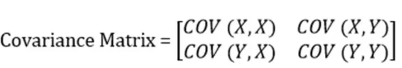
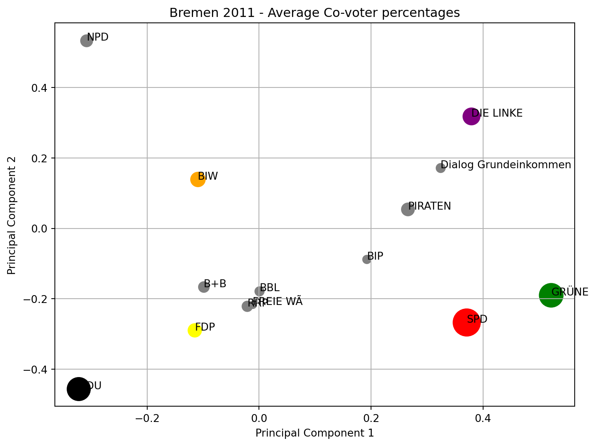

The objective of this master’s thesis is to conduct a thorough and systematic analysis of political party preferences in Bremen across the last four electoral cycles, employing advanced data science methods. The study captures and visualizes the correlations between political parties based on voting data using dimensionality reduction techniques such as Principal Component Analysis (PCA), Multidimensional Scaling (MDS), and t-Distributed Stochastic Neighbor Embedding (t-SNE). The datasets for these models were generated using two different methods: the first builds a matrix from the percentages of co-voters for each pair of political parties, and the second computes the ratio of the union to the intersection of co-voters. These approaches provide a comprehensive view of voter base overlaps and the relative breadth of party support. The application of PCA, MDS, and t-SNE to these datasets reveals underlying patterns and shifts in political alignment among voters. The findings of this study offer novel and significant insights into the development and transformation of the political landscape in Bremen, highlighting trends and relationships that may not be apparent through traditional analysis methods.
2 Introduction
2.1 Background and Motivation
Bremen is a city-state in Germany with a long and rich history of political participation and diversity. It is the smallest and oldest of the 16 federal states, with a population of about 680,000 and an area of 419 km². It consists of two major cities, Bremen and Bremerhaven, which are separated by 60 km of Lower Saxony. Bremen is known for its maritime economy, cultural heritage, and cosmopolitan outlook, while Bremerhaven is a major port and a center of scientific research.
The political landscape of Bremen reflects its unique and dynamic character. It has been a stronghold of the Social Democratic Party (SPD), a center-left party, since 1946. The SPD has historically been influential in shaping the state’s policies and governance. On the left of the political spectrum, Bremen has also seen the presence of the Left Party (Die Linke), representing far-left ideologies and advocating for more radical changes in social and economic policies.On the right of the spectrum, the Christian Democratic Union (CDU) has been a significant political force, representing center-right to right-wing views with a focus on conservative values and market-oriented policies. The Free Democratic Party (FDP), which also aligns with center-right ideologies, advocates for economic liberalism and individual freedoms.
In recent years, the political landscape has become more fragmented with the rise of new parties. The Green Party (Die Grünen), positioned on the left, emphasizes environmental issues, social justice, and sustainable development. On the far-right, the Alternative for Germany (AfD) has gained prominence, advocating for nationalist and anti-immigration policies. The Citizens in Rage (BiW) is another right-wing party that has emerged, often focusing on local issues and expressing populist sentiments.
Elections in Bremen, like in other historic cities, are influenced by various factors such as economic conditions, social issues, media coverage, and voter turnout. The results of these elections have significant implications for governance, policies, and representation at the state level, as well as for Bremen’s relations with the federal government and other states.
The motivation for this study stems from a desire to extend the use of data science and machine learning beyond their traditional applications in pure sciences, exploring their potential in the social sciences. Analyzing the political landscape using advanced data science techniques offers an intriguing opportunity to gain new insights into voter behavior and party dynamics. By applying methods such as Principal Component Analysis (PCA), Multidimensional Scaling (MDS), and t-Distributed Stochastic Neighbor Embedding (t-SNE) to the Bremen election data, this study aims to uncover patterns and allign parties in a two dimensional scalling
This study will employ dimensionality reduction techniques to create visual representations of political party relationships based on voter data. The datasets for these models are constructed using two approaches: one based on the percentages of co-voters for each pair of political parties, and the other on the ratio of the union to the intersection of co-voters. These methods provide a nuanced view of voter base overlaps and the relative breadth of party support.
The results of this analysis are expected to contribute valuable insights into the evolving political landscape of Bremen, highlighting trends and relationships that could inform future electoral strategies and political understanding. By venturing into the realm of social science through the lens of data science, this study aims to demonstrate the versatility and applicability of machine learning techniques in understanding complex societal phenomena.
2.2 Research Question
How have the voting patterns for political parties in Bremen evolved over the past four electoral cycles?
How much is the voter trend changing in Bremen over the last four (4) elections and what doe this signify for Bremen as a state?
Can dimensionality reduction techniques (PCA, MDS, and T-SNE) reveal any significant shifts or trends in the political landscape of Bremen?
2.2.1 Significance of the studies
Understanding the political landscape of Bremen through a data science lens holds immense significance for various reasons. Firstly, this study has the potential to unveil the intricate changes in voters’ preferences and behaviors over time. By employing advanced data science techniques, such as Principal Component Analysis (PCA), Multidimensional Scaling (MDS), and t-Distributed Stochastic Neighbor Embedding (t-SNE), the analysis can identify patterns and trends in voting behavior, shedding light on the factors that have influenced these shifts. Unraveling the dynamics of voter preferences is crucial for fostering a deeper comprehension of the democratic processes within the region.
Secondly, the study aims to explore how political parties in Bremen, spanning the political spectrum from the far-left (Die Linke) to the far-right (AfD), as well as center-left (SPD) and center-right (CDU, FDP) parties, have adapted their strategies and policies in response to the evolving electoral landscape. Investigating the challenges faced by these political entities allows for a nuanced understanding of the strategies that proved successful and those that were less effective. This knowledge can be instrumental for both political practitioners and researchers, providing insights into the adaptive capabilities of political organizations in a dynamic environment.
Moreover, the study will consider the size and influence of these parties. By analyzing large, established parties like the SPD and CDU alongside smaller or emerging parties like the Greens, AfD, and BiW, the research can highlight differences in their voter bases, policy impacts, and strategic adaptations. This comprehensive view contributes to a richer understanding of the political ecosystem in Bremen.
Furthermore, the analysis of political outcomes and their impact on governance, development, and representation in Bremen at the state and federal levels is of paramount importance. Understanding how shifts in political power translate into tangible effects on governance and development helps policymakers anticipate and respond to emerging trends. It also provides an opportunity to identify risks and opportunities associated with different political scenarios, offering valuable insights for proactive decision-making.
Beyond its local implications, the study significantly advances the broader literature on political analysis. The application of advanced data science techniques, including machine learning models and statistical measures, to the analysis of complex and dynamic political data is a novel contribution. By demonstrating the efficacy of these methods in a real-world political context, the study enriches the toolkit available for political scientists and data analysts alike, paving the way for innovative approaches in future research endeavors.
Moreover, the study enables a comparative analysis of different methods and tools for political analysis, evaluating their respective strengths and limitations. This comparative aspect is crucial for advancing the field, guiding researchers and practitioners towards the most effective approaches based on the specific nuances of their data and research questions.
Lastly, effective communication and dissemination of findings are vital aspects of the study. Understanding how to convey complex political insights derived from data science methodologies to diverse audiences and stakeholders ensures the practical utility of the research. The study will contribute to the development of effective communication strategies, facilitating the translation of data-driven political analyses into actionable information for policymakers, political actors, and the public. This will help bridge the gap between complex data science techniques and practical political applications, ensuring that the insights gained are accessible and impactful.
2.3 Literature Review
The analysis of election data has become increasingly vital in understanding the dynamics of political landscapes, voter behaviors, and party strategies.
Temporal analysis of election data has been a recurrent theme in the literature, with researchers employing diverse statistical techniques to unravel the changing preferences of voters over time. Studies such as (Bowler et al., 2018) and (Exploring the Political Pulse of a Country Using Data Science Tools | Journal of Computational Social Science, n.d.) have applied time series analysis to model the evolution of voter sentiment, identifying critical factors influencing shifts in electoral preferences.
Understanding the ramifications of election outcomes on governance, development, and representation has garnered attention in the literature. Notable studies, such as (Kellermann, 2023) delve into the practical implications of political shifts, exploring how changes in power dynamics influence policy decisions, public services, and overall governance. The integration of advanced data science techniques into political analysis represents a growing trend. Works by (Aramburo et al., 2022) showcase the application of machine learning models and statistical measures, such as sentiment analysis to discern complex patterns within election data. These studies contribute to the evolving methodology in political science research, opening avenues for more nuanced analyses.
Effectively communicating complex political insights derived from data science methodologies is a crucial aspect explored in the literature. Studies, such as (Exploring the Political Pulse of a Country Using Data Science Tools | Journal of Computational Social Science, n.d.), focus on developing communication strategies that bridge the gap between technical analyses and the comprehension of diverse audiences, including policymakers, political actors, and the general public.
3 Methodology
3.1 Data Collection & processing
In order to conduct a comprehensive study on the political landscape of Bremen, election data has been sourced directly from the Statistisches Landesamt Bremen. As the mandated legal body responsible for the management and storage of election data in Bremen, Statistisches Landesamt plays a pivotal role in ensuring the accuracy, integrity, and accessibility of electoral information. By collaborating with this authoritative institution, the study ensures access to a reliable and official dataset, providing a solid foundation for the ensuing data science analysis. The utilization of data curated and maintained by Statistisches Landesamt Bremen not only enhances the credibility of the research findings but also underscores the commitment to adhering to legal and ethical standards in acquiring and utilizing electoral data for academic purposes. This collaboration reinforces the study’s dedication to conducting rigorous and responsible research on the political dynamics of Bremen.
3.2 The Five-Vote System in Germany
In Germany, the electoral system used for federal elections is a mixed-member proportional representation system. Each voter has two votes: the first for an individual constituency candidate, and the second for a party-list in a particular state/Land (The Voting System, n.d.). Voters receive a ballot paper that allows them to cast two votes, referred to as the “first vote” (Erststimme) and the “second vote” (Zweitstimme). This system is designed to combine the benefits of direct and proportional representation. Here’s a brief overview of how the ballot works and how the data is collected.
3.2.1 The Ballot Paper
The German ballot paper is divided into two sections:
First Vote (Erststimme): This vote is cast for a direct candidate in the voter’s constituency. The candidate with the most votes in each constituency wins a seat in the Bundestag (Germany’s federal parliament). Each candidate is identified by a unique code. The last two digits of this code represent the candidate number, while the first two digits represent the party affiliation. Second Vote (Zweitstimme): This vote is cast for a political party. It determines the overall proportion of seats each party will receive in the Bundestag. The second vote is crucial because it decides the total representation of parties in parliament. ####
During the election, votes are collected and recorded with specific codes that identify both the party and the candidate. For instance:
First Vote (Erststimme) Data:
A code like 0101 might represent a candidate from Party 01 (e.g., SPD) who is candidate number 01 in that party. 0202 could represent a candidate from Party 02 (e.g., CDU) who is candidate number 02 in that party.
Second Vote (Zweitstimme) Data:
Votes are recorded for the parties based on the proportional representation system. A code like 01 would count as a vote for Party 01 (SPD). 02 would count as a vote for Party 02 (CDU).
The data collected from the ballots is processed to understand voting patterns and party preferences. Each vote is logged with the relevant codes, and this information is aggregated to analyze the overall electoral outcomes.
Consider the following data records from an election: ** 0101, 0102, 0201, 0301, 0401 **
These records indicate that the voters chose candidates and parties as follows:
Voter 1 chose candidate 01 from Party 01 (SPD) and Party 01 (SPD) for the second vote.
Voter 2 chose candidate 02 from Party 01 (SPD) and Party 02 (CDU) for the second vote.
Voter 3 chose candidate 01 from Party 02 (CDU) and Party 03 (Greens) for the second vote.
Voter 4 chose candidate 01 from Party 03 (Greens) and Party 01 (SPD) for the second vote.
Voter 5 chose candidate 01 from Party 04 (FDP) and Party 04 (FDP) for the second vote.
NB: These partyy codes like 01 for SPD are not static, the change in every election cycle based on the performance of the parties in the privous elections and some other factors.
This dual voting system allows for a nuanced representation of voter preferences, balancing direct candidate support with proportional party representation.
3.3 Data Preprocessing
To analyze the political landscape of Bremen using dimensionality reduction techniques such as PCA, MDS, and T-SNE, we prepared our datasets with a focus on voter behavior patterns. The raw data from the The goal was to transform the raw voting data into a format suitable for these techniques, capturing the relationships between political parties in a meaningful way. Two distinct approaches were used to create our datasets, ensuring a comprehensive analysis.
Code
import pandas as pdparty_codes = pd.read_excel("../Data/Parteien-Codes.xlsx")def count_unique_numbers(df): df = df.astype(int) unique_counts = {}for index, row in df.iterrows():for value in row:if value >0: unique_counts[value] = unique_counts.get(value, 0) +1 unique_counts_df = pd.DataFrame(list(unique_counts.items()), columns=['Number', 'Count'])return unique_counts_dfdef get_hundredth(number):return (number //100) *100#Merged with party codedef party_percentage_dist(df, party_codes, year, district):# Merge with the party code unique_counts_df = count_unique_numbers(df) unique_counts_df['party_id'] = unique_counts_df['Number'].apply(get_hundredth) party_votes = unique_counts_df.groupby('party_id')['Count'].sum().reset_index() party_votes.columns = ['party_id', 'total_count'] total_votes = party_votes['total_count'].sum() party_votes['percentage %'] = ((party_votes['total_count'] / total_votes) *100).round(2) party_codes = party_codes[(party_codes['year'] == year) & (party_codes['district'] == district)][['party_id', 'Kurzform', 'Colour']] merged_df = pd.merge(party_votes, party_codes, how='inner', on='party_id')#table_party = tabulate(merged_df, headers='keys', tablefmt='fancy_grid')return merged_dfdf_2011 = pd.read_excel('../Data/Stimmzettel 2011 Wahlbereich Bremen Vertrag.xlsx')df_2011 = df_2011.iloc[0:]new_headers = df_2011.iloc[0]df_2011.columns = new_headersdf_2011 =df_2011[1:]df_2011.isnull()df_2011.fillna(0, inplace=True)Valid_count = df_2011[df_2011['Bemerkungen'] ==0].shape[0]print(f"There are a total of {df_2011.shape[0]} voters in the 2011 Bremen data set of which {Valid_count} successfully cast their votes")df_2011 = df_2011[df_2011['Bemerkungen'] ==0]df_2011 = df_2011.drop(columns="Bemerkungen")df_2011 = df_2011.astype(str) #df_2011.to_pickle("../../Data/prepared_date/Bremen_2011.pkl")year =2011district ='Bremen'bremen_2011_percent = party_percentage_dist(df_2011, party_codes, year, district)df_2015 = pd.read_excel("../Data/Stimmzettel 2015 Wahlbereich Bremen Vertrag.xlsx")df_2015 = df_2015.iloc[0:]new_headers = df_2015.iloc[0]df_2015.columns = new_headersdf_2015 =df_2015[1:]df_2015 = df_2015.reset_index(drop=True)df_2015.fillna(0, inplace=True)Valid_count_2015 = df_2015[df_2015['Bemerkungen'] ==0].shape[0]print(f"There are a total of {df_2015.shape[0]} voters in the 2015 data set of which {Valid_count_2015} successfully cast their votes")df_2015 = df_2015[df_2015['Bemerkungen'] ==0]df_2015 = df_2015.drop(columns="Bemerkungen") df_2015 = df_2015.astype(str)#df_2015.to_pickle("../../Data/prepared_date/Bremen_2015.pkl")year =2015district ='Bremen'bremen_2015_percent = party_percentage_dist(df_2015, party_codes, year, district)df_2019 = pd.read_excel("../Data/Stimmzettel 2019 Wahlbereich Bremen Vertrag.xlsx")df_2019.fillna(0, inplace=True)Valid_count_2019 = df_2019[df_2019['Grund Ungültigkeit'] ==0].shape[0]print(f"There are a total of {df_2019.shape[0]} voters in the 2019 data set of which {Valid_count_2019} successfully cast their votes")df_2019 = df_2019[df_2019['Grund Ungültigkeit'] ==0]df_2019 = df_2019.drop(columns="Grund Ungültigkeit") df_2019.rename(columns={'Stimme1': 'Stimme 1', 'Stimme2':'Stimme 2', 'Stimme3':'Stimme 3', 'Stimme4':'Stimme 4', 'Stimme5':'Stimme 5'}, inplace=True)df_2019 = df_2019.astype(int).astype(str)#df_2019.to_pickle("../../Data/prepared_date/Bremen_2019.pkl")year =2019district ='Bremen'bremen_2019_percent = party_percentage_dist(df_2019, party_codes, year, district)df_2023 = pd.read_excel("../Data/Stimmzettel 2023 Wahlbereich Bremen Vertrag.xlsx")df_2023 = df_2023.iloc[0:]new_headers = df_2023.iloc[0]df_2023.columns = new_headersdf_2023 =df_2023[1:]df_2023 = df_2023.reset_index(drop=True)Valid_count_2023 = df_2023[df_2023['Gültigkeit'] ==0].shape[0]print(f"There are a total of {df_2023.shape[0]} voters in the 2019 data set of which {Valid_count_2023} successfully cast their votes")df_2023.drop(df_2023[df_2023['Gültigkeit'] =='Ungültig (per Beschluss)'].index, inplace =True)df_2023.drop(df_2023[df_2023['Gültigkeit'] =='Ungültig'].index, inplace =True)df_2023 = df_2023.drop(columns="Gültigkeit")df_2023 = df_2023.drop(columns="Bemerkung")df_2023.fillna(0, inplace=True)df_2023 = df_2023.astype(str)#df_2023.to_pickle("../../Data/prepared_date/Bremen_2023.pkl")year =2023district ='Bremen'bremen_2023_percent = party_percentage_dist(df_2023, party_codes, year, district)
There are a total of 232883 voters in the 2011 Bremen data set of which 225621 successfully cast their votes
There are a total of 210604 voters in the 2015 data set of which 204466 successfully cast their votes
There are a total of 260951 voters in the 2019 data set of which 255119 successfully cast their votes
There are a total of 227160 voters in the 2019 data set of which 0 successfully cast their votes
3.3.1 Analysis of Party Vote Percentages Trends Over Four Elections
This chapter uses in-depth visuals to examine Bremen’s vote trends during the last four election cycles. We can tell which political parties have seen a rise in support and which have seen a fall by looking at bar charts and line graphs that show the movements in party vote percentages. We can plainly see how the political scene is changing and how voter preferences are dynamically shifting thanks to these visual tools. This chapter seeks to give readers a thorough grasp of how various parties have fared over time, along with insights into the causes of these shifts and their consequences for upcoming elections.
The bar charts plotted below illustrate the percentage of votes received by each political party in Bremen over the last four electoral cycles. These visualizations provide a clear depiction of the shifting political landscape in the region. The Social Democratic Party (SPD) has traditionally maintained a strong presence, although its vote share has fluctuated. The Christian Democratic Union (CDU) has similarly experienced variations in its support base, reflecting changing voter sentiments. The Green Party (Die Grünen) has shown a steady increase in vote percentages, highlighting growing environmental and social awareness among the electorate. Conversely, the Left Party (Die Linke) and the Free Democratic Party (FDP) have witnessed more variable performance, indicative of their targeted, sometimes niche appeal. Notably, the rise of the Alternative for Germany (AfD), a far-right party, underscores a significant shift in a portion of the voter base towards more nationalist and populist ideologies. These bar charts not only showcase the ebb and flow of party support but also offer insights into broader electoral trends and the evolving political priorities of Bremen’s voters. This analysis forms a crucial foundation for understanding the dynamics of voter behavior and the strategic adaptations of political parties over time.
The line graph presented below highlights the changing vote percentages for each political party in Bremen over the past four electoral cycles, offering a dynamic view of party growth and decline. The graph traces the trajectory of each party’s performance, revealing significant trends and shifts in voter allegiance.
The Social Democratic Party (SPD) has shown a general decline over the years. In 2011, the SPD garnered almost 40% of the votes, but this support has steadily decreased, reaching a low of about 25% in 2015. This downward trend indicates a diminishing traditional support base for the SPD in Bremen.
Conversely, the Christian Democratic Union (CDU) is on an upward trajectory. Starting with approximately 20% of the votes in 2011, the CDU has seen a steady increase over the years, reaching around 27% in the most recent election. This growth suggests a strengthening of the CDU’s appeal among Bremen’s electorate.
The Green Party (Die Grünen) has experienced a steady decrease in its vote share, declining from about 23% in 2011 to 17% in 2023. This trend reflects a shift in voter priorities or a possible realignment of the environmental and progressive agenda within the broader political spectrum.
The Left Party (Die Linke) is on a steady increase, with its vote share rising from 6% in 2011 to about 12% in 2023. This upward trend indicates a growing appeal for the Left Party’s platform and policies among voters in Bremen.
Additionally, the political landscape has been enriched by the emergence of new parties such as Volt. Although still gaining traction, Volt’s presence in the political arena signifies the evolving nature of voter preferences and the increasing diversification of political representation.
Overall, the line graph effectively captures the dynamic and evolving nature of political party support in Bremen. It provides valuable insights into how parties have adapted to changing voter priorities and the broader socio-political environment. This analysis is crucial for understanding the strategic responses of political parties and predicting future electoral outcomes.
Code
# -----------------------------# read the party codes#-----------------------party_codes = pd.read_excel("../Data/Parteien-Codes.xlsx")party_codes_2011 = party_codes[(party_codes['year'] ==2011) & (party_codes['district'] =='Bremen')][['party_id', 'Kurzform', 'Colour']]party_codes_2015 = party_codes[(party_codes['year'] ==2015) & (party_codes['district'] =='Bremen')][['party_id', 'Kurzform', 'Colour']]party_codes_2019 = party_codes[(party_codes['year'] ==2019) & (party_codes['district'] =='Bremen')][['party_id', 'Kurzform', 'Colour']]party_codes_2023 = party_codes[(party_codes['year'] ==2023) & (party_codes['district'] =='Bremen')][['party_id', 'Kurzform', 'Colour']]#--------------------# Load datasets and get the numbers of voters for each party#------df_2011 = pd.read_pickle("../Data/prepared_date/Bremen_2011.pkl")df_2015 = pd.read_pickle("../Data/prepared_date/Bremen_2015.pkl")df_2019 = pd.read_pickle("../Data/prepared_date/Bremen_2019.pkl")df_2023 = pd.read_pickle("../Data/prepared_date/Bremen_2023.pkl")def convert_to_hundredth(df): df = df.applymap(int) df = df.applymap(lambda x: (x //100) *100)return dfdf_bre_2011 = convert_to_hundredth(df_2011)df_bre_2015 = convert_to_hundredth(df_2015)df_bre_2019 = convert_to_hundredth(df_2019)df_bre_2023 = convert_to_hundredth(df_2023)############ -----------------------------#Convert the party codes to names#---------------------------def replace_codes_with_names(df_data, df_codes): merged_columns = []for code_column in ['Stimme 1', 'Stimme 2', 'Stimme 3', 'Stimme 4', 'Stimme 5']: merged_df = pd.merge(df_data, df_codes, how='left', left_on=code_column, right_on='party_id') merged_df.drop(columns=[col for col in merged_df.columns if col !='Kurzform'], inplace=True) merged_df.rename(columns={'Kurzform': code_column}, inplace=True) merged_columns.append(merged_df) final_df = pd.concat(merged_columns, axis=1)return final_dfdf_bre_2011_prty = replace_codes_with_names(df_bre_2011, party_codes_2011)df_bre_2015_prty = replace_codes_with_names(df_bre_2015, party_codes_2015)df_bre_2019_prty = replace_codes_with_names(df_bre_2019, party_codes_2019)df_bre_2023_prty = replace_codes_with_names(df_bre_2023, party_codes_2023)#--------------------------# Function to get total voters for each pary#---------------------------def count_total_voters(df): df = df.dropna() unique_counts = {}for _, row in df.iterrows(): unique_values_in_row =set(row)for value in unique_values_in_row: unique_counts[value] = unique_counts.get(value, 0) +1# Convert the dictionary to a DataFrame unique_counts_df = pd.DataFrame(list(unique_counts.items()), columns=['Party_id', 'Total_voters'])#df_party = df_party_pairs.merge(df_total_voters, how='left', left_on='Party_Code_A', right_on='Party_id')return unique_counts_dfdf_2011_total_voters = count_total_voters(df_bre_2011_prty)df_2015_total_voters = count_total_voters(df_bre_2015_prty)df_2019_total_voters = count_total_voters(df_bre_2019_prty)df_2023_total_voters = count_total_voters(df_bre_2023_prty)
Co-voter Percentage Matrix In the first approach, we constructed a matrix based on the percentages of co-voters for each pair of political parties. Here, co-voters are defined as voters who voted for both parties in question. For each pair of parties, we calculated the average of co-voters on both direction, ie avegrage of percentage of Party A voters that voted for Party B and vice viser. This method emphasizes the overlap in voter bases between different parties, providing insight into potential alliances or ideological similarities.
For example, if Party A and Party B share a significant percentage of their voters, this will result in a higher value in the co-voter percentage matrix. Likewise, parties with minimal overlap in their voter bases will show lower values. This matrix, therefore, serves as a measure of voter commonality and helps identify clusters of parties with shared electorates and share common values.
Code
from collections import Counterfrom itertools import combinations#---------------------------------# Generate Uniqure pairs of parties that voters voted for# ---------------------------def unique_pairs_with_count(df): df = df.applymap(int) pair_counter = Counter()for index, row in df.iterrows(): row_values = [(x //100) *100for x in row if x!=0] unique_pairs =set(combinations(row_values, 2)) pair_counter.update(unique_pairs) pair_counts_df = pd.DataFrame(pair_counter.items(), columns=['Pair', 'Count']) pair_counts_df[['Party_Code_A', 'Party_Code_B']] = pd.DataFrame(pair_counts_df['Pair'].tolist()) pair_counts_df = pair_counts_df[['Party_Code_A', 'Party_Code_B', 'Count']]return pair_counts_dfdf_2011_pair = unique_pairs_with_count(df_2011)df_2015_pair = unique_pairs_with_count(df_2015)df_2019_pair = unique_pairs_with_count(df_2019)df_2023_pair = unique_pairs_with_count(df_2023)df_2011_pair.head(10)#------------------------# Replace party codes with party names in the covoter dataframe #-------------------------def merge_and_clean(df, party_codes):#df_merged= df.merge(party_votes, how='left', left_on ='Party_Code_A', right_on= ['Party_id'])# Merge with party codes for party A df_merged = df.merge(party_codes, how='left', left_on='Party_Code_A', right_on='party_id') df_merged.drop(columns=['party_id'], inplace=True) df_merged.rename(columns={'Kurzform': 'party_A'}, inplace=True)# Merge with party codes for party B df_merged = df_merged.merge(party_codes, how='left', left_on='Party_Code_B', right_on='party_id') df_merged.drop(columns=['party_id'], inplace=True) df_merged.rename(columns={'Kurzform': 'party_B'}, inplace=True)return df_mergeddf_2011_party_pairs = merge_and_clean(df_2011_pair, party_codes_2011)df_2015_party_pairs = merge_and_clean(df_2015_pair, party_codes_2015)df_2019_party_pairs = merge_and_clean(df_2019_pair, party_codes_2019)df_2023_party_pairs = merge_and_clean(df_2023_pair, party_codes_2023)df_2011_party_pairs.head(10)# --------------------------------# Get the avaerage percentage of co voters to compute the matrix# --------------------------------def compute_party_voting_percentages(df_party_pairs, df_total_voters): df_party = df_party_pairs.merge(df_total_voters, how='left', left_on='party_A', right_on='Party_id') df_party['Percentage_A_voted_B'] = (df_party['Count'] / df_party['Total_voters']) *100 df_party.drop(columns=['Total_voters'], inplace=True) df_party = df_party.merge(df_total_voters, how='left', left_on='party_B', right_on='Party_id', suffixes=('_A', '_B')) df_party['Percentage_B_voted_A'] = (df_party['Count'] / df_party['Total_voters']) *100 df_party.drop(columns=['Total_voters'], inplace=True) df_party_result = df_party[['party_A', 'party_B', 'Count', 'Percentage_A_voted_B', 'Percentage_B_voted_A']] df_party_result['Average_percentage'] = ((df_party_result['Percentage_A_voted_B'] + df_party_result['Percentage_B_voted_A']) /200).round(1)return df_party_resultdf_2011_party_percentages = compute_party_voting_percentages(df_2011_party_pairs,df_2011_total_voters)df_2015_party_percentages = compute_party_voting_percentages(df_2015_party_pairs,df_2015_total_voters)df_2019_party_percentages = compute_party_voting_percentages(df_2019_party_pairs,df_2019_total_voters)df_2023_party_percentages = compute_party_voting_percentages(df_2023_party_pairs,df_2023_total_voters)df_2011_party_percentages.head(10)
C:\Users\manja\AppData\Local\Temp\ipykernel_22228\3414713232.py:74: SettingWithCopyWarning:
A value is trying to be set on a copy of a slice from a DataFrame.
Try using .loc[row_indexer,col_indexer] = value instead
See the caveats in the documentation: https://pandas.pydata.org/pandas-docs/stable/user_guide/indexing.html#returning-a-view-versus-a-copy
C:\Users\manja\AppData\Local\Temp\ipykernel_22228\3414713232.py:74: SettingWithCopyWarning:
A value is trying to be set on a copy of a slice from a DataFrame.
Try using .loc[row_indexer,col_indexer] = value instead
See the caveats in the documentation: https://pandas.pydata.org/pandas-docs/stable/user_guide/indexing.html#returning-a-view-versus-a-copy
C:\Users\manja\AppData\Local\Temp\ipykernel_22228\3414713232.py:74: SettingWithCopyWarning:
A value is trying to be set on a copy of a slice from a DataFrame.
Try using .loc[row_indexer,col_indexer] = value instead
See the caveats in the documentation: https://pandas.pydata.org/pandas-docs/stable/user_guide/indexing.html#returning-a-view-versus-a-copy
C:\Users\manja\AppData\Local\Temp\ipykernel_22228\3414713232.py:74: SettingWithCopyWarning:
A value is trying to be set on a copy of a slice from a DataFrame.
Try using .loc[row_indexer,col_indexer] = value instead
See the caveats in the documentation: https://pandas.pydata.org/pandas-docs/stable/user_guide/indexing.html#returning-a-view-versus-a-copy
party_A
party_B
Count
Percentage_A_voted_B
Percentage_B_voted_A
Average_percentage
0
SPD
SPD
105910
94.716414
94.716414
0.9
1
SPD
CDU
9739
8.709689
18.067975
0.1
2
SPD
GRÜNE
39435
35.267131
51.847908
0.4
3
SPD
DIE LINKE
5917
5.291635
30.401274
0.2
4
SPD
FDP
2058
1.840491
24.691062
0.1
5
SPD
BIW
2534
2.266183
24.625850
0.1
6
SPD
BBL
640
0.572359
32.128514
0.2
7
SPD
Dialog Grundeinkommen
509
0.455204
23.663412
0.1
8
SPD
B+B
920
0.822766
28.316405
0.1
9
SPD
BIP
601
0.537481
43.709091
0.2
Code
def create_percentage_matrix(df):# Get unique values of party_A and party_B unique_party_A = df['party_A'].unique() unique_party_B = df['party_B'].unique() matrix = pd.DataFrame(index=unique_party_A, columns=unique_party_A)for party_A in unique_party_A:for party_B in unique_party_A: subset_df = df[(df['party_A'] == party_A) & (df['party_B'] == party_B)]ifnot subset_df.empty: average_percentage = subset_df['Average_percentage'].values[0] matrix.loc[party_A, party_B] = average_percentage matrix.fillna(0, inplace=True)# Mirror the lower triangle to the upper trianglefor i inrange(len(matrix)):for j inrange(i): matrix.iloc[i, j] = matrix.iloc[j, i]return matrixprint(f"This gives a Upper truangular matrix or Right trainagular, so I mirrowed the lower traingular matrix to the upper triangular to get a full symmetrix matrix")# Call the function with your DataFramematrix_bre_2011 = create_percentage_matrix(df_2011_party_percentages)matrix_bre_2015 = create_percentage_matrix(df_2015_party_percentages)matrix_bre_2019 = create_percentage_matrix(df_2019_party_percentages)matrix_bre_2023 = create_percentage_matrix(df_2023_party_percentages)print(tabulate(matrix_bre_2011, headers='keys', tablefmt='grid'))
This gives a Upper truangular matrix or Right trainagular, so I mirrowed the lower traingular matrix to the upper triangular to get a full symmetrix matrix
Union-to-Intersection Ratio Matrix The second approach involved calculating the ratio of the union to the intersection of co-voters for each pair of political parties. This ratio captures the relative breadth and exclusivity of party support. Specifically, the union represents the total number of unique voters for either party, while the intersection denotes the number of voters who supported both parties.
Mathematically, this ratio is defined as: \[
Union-to-Intersection Ratio = \frac{∣Union of co-voters∣}{∣Intersection of co-voters∣}
\]
A higher ratio indicates that while there is some overlap in voter bases, each party also attracts a significant number of unique voters. This can highlight distinct but occasionally intersecting political constituencies. In contrast, a lower ratio suggests a stronger mutual reliance on the same voter base, indicating a closer relationship or similarity between the parties.
Code
#--------------------------------------# get function to create a matrix for the ration of the common voters to all voter#----------------------------------------- def count_votes_for_pairs(df): df = df.applymap(int) pair_counter = Counter() df['party_a_intersection_party_b'] =0 df['party_a_union_party_b'] =0for index, row in df.iterrows(): row_values = [(x //100) *100for x in row if x!=0] unique_pairs =set(combinations(row_values, 2)) pair_counter.update(unique_pairs) pair_counts_df = pd.DataFrame(pair_counter.items(), columns=['Pair', 'Count']) pair_counts_df[['Party_Code_A', 'Party_Code_B']] = pd.DataFrame(pair_counts_df['Pair'].tolist())#pair_counts_df = pair_counts_df[['Party_Code_A', 'Party_Code_B', 'Count']]# Iterate over each row in the DataFramefor index, row in df.iterrows(): party_a = row['Party_Code_A'] party_b = row['Party_Code_B']# Count votes for both parties and votes for either party votes_for_both = df[(df['Party_Code_A'] == party_a) & (df['Party_Code_B'] == party_b)]['Count'].sum() votes_for_either = df[(df['Party_Code_A'] == party_a) | (df['Party_Code_B'] == party_b)]['Count'].sum() ratio_f = (votes_for_both / votes_for_either).round(2)# Update the new columns with counts df.loc[index, 'party_a_intersection_party_b'] = votes_for_both df.loc[index, 'party_a_union_party_b'] = votes_for_either df.loc[index, 'party_votes_ratio'] = ratio_freturn dfdf_2011_pair_union = count_votes_for_pairs(df_2011_pair)df_2015_pair_union = count_votes_for_pairs(df_2015_pair)df_2019_pair_union = count_votes_for_pairs(df_2019_pair)df_2023_pair_union = count_votes_for_pairs(df_2023_pair)df_2011_party_pairs_ratio = merge_and_clean(df_2011_pair_union, party_codes_2011)df_2015_party_pairs_ratio = merge_and_clean(df_2015_pair_union, party_codes_2015)df_2019_party_pairs_ratio = merge_and_clean(df_2019_pair_union, party_codes_2019)df_2023_party_pairs_ratio = merge_and_clean(df_2023_pair_union, party_codes_2023)def create_ratio_matrix(df):# Get unique values of party_A and party_B unique_party_A = df['party_A'].unique() unique_party_B = df['party_B'].unique() matrix = pd.DataFrame(index=unique_party_A, columns=unique_party_B)# Iterate over each unique pair of parties and fill in the matrix with the average percentagefor party_A in unique_party_A:for party_B in unique_party_B: subset_df = df[(df['party_A'] == party_A) & (df['party_B'] == party_B)]ifnot subset_df.empty: voter_ratio = subset_df['party_votes_ratio'].values[0] matrix.loc[party_A, party_B] = voter_ratio matrix.fillna(0, inplace=True)# Mirror the lower triangle to the upper trianglefor i inrange(len(matrix)):for j inrange(i): matrix.iloc[i, j] = matrix.iloc[j, i]return matrixmatrix_bre_2011_ratio = create_ratio_matrix(df_2011_party_pairs_ratio)matrix_bre_2015_ratio = create_ratio_matrix(df_2015_party_pairs_ratio)matrix_bre_2019_ratio = create_ratio_matrix(df_2019_party_pairs_ratio)matrix_bre_2023_ratio = create_ratio_matrix(df_2023_party_pairs_ratio) print(tabulate(matrix_bre_2011_ratio, headers='keys', tablefmt='grid'))
Dimension reduction refers to a set of techniques which can transform high-dimensional data into their representative low-dimensional data. During the process, some information of the original data is discarded but some main characteristics of the original data is preserved.
Three dimension reduction techniques:
Principal Component Analysis (PCA) - PCA tries to project the original high-dimensional data into lower dimensions by capturing the most prominent variance in the data. It is a linear combination that projects the data lower component with respect to relative variance
Multidimensional Scaling (MDS) - MDS is a technique for reducing data dimensions while attempting to preserve the relative distance between high-dimensional data points. It keeps the relative distances proportional
Stochastic Neighbor Embedding (SNE) - SNE is a non-linear technique to “cluster” data points by trying to keep similar data points close to each other.
3.5.1 Principal Component Analysis
Principal component analysis (PCA) is often used to find a low dimensional representation of data that maximizes the spread of the projected data. The first principal component is the direction of the largest variance of the data. The second principal component is perpendicular to the first principal component and is the direction of the largest variance of the data among all directions that are perpendicular to the first principal component. The third principal component () is perpendicular to both first and second principal components and is in the direction of the largest variance among all directions that are perpendicular to both the first and second principal components
3.5.1.1 Steps to calculate PCA
STANDARDIZATION This is a standard proceduer in data preparation for any machine learning algorithm, standardizing data simple mean putting the dataset in a standard range, there by removing or reducing the effects of outliers. \[
standard value, z = \frac{∣value - mean∣}{Standard deviation}
\] In the Matrix dataset that we’ve created in the previous chapter, the data is already standadized; the first matrix is was measured in percentages which was reduced to 0-1 in the matrix and the second matrix was also a ration of intersection to union which is also in the range of 0 and 1. So for this dataset(matrix) we will convert our marix dataset to a numpy array to ab able to perform the next steps
COVARIANCE MATRIX COMPUTATION The covariance matrix is simply to undestand how the variable of a dataset are varying from the mean with respect to each other  I our matrix, we have the political parties on both side so the corelation matrix will shoe the corelation between each two political parties in the dataset
Code
import numpy as np# Calculate the covariance matrix, eigenvalues and eigenvectorscovariance_matrix = np.cov(matrix_array, rowvar=False)covariance_matrix
FEATURE VECTOR (EIGENVALUES & EIGENVECTORS) EigenVectors and EignValues are the features we need form the covariance matrix in order for us to comput the principal components. The EigneVectors and EigenValues comes in pair, so for an N*N matrix, there are N Eignevector and N Eigenvalues. The Eigenvalue is the maginitude while the Eigenvectors od the covariance matrix show the direction of the axes with the most variance which translate to the principal component
For a square matrix A, an Eigenvector and Eigenvalue make this equation true: Mathematically, $$ Av = λv
Av = λvI ; I is an Identity Matrix
Av - λvI = 0
If v is non - zero;
|A-λI| = 0 $$
Code
eigenvalues, eigenvectors = np.linalg.eig(covariance_matrix)# Make a list of (eigenvalue, eigenvector) tupleseig_pairs = [(np.abs(eigenvalues[i]), eigenvectors[:, i]) for i inrange(len(eigenvalues))]eig_pairs.sort(key=lambda x: x[0], reverse=True)eig_pairs[0]
The first Principal Component is the EigenVector corresponding to the highest Eigen values, and the second component is the second eigenvectore and so on. so now that we’ve attain out component, we will go ahead and visual them # RESULTS ## PCA
Code
#---------------------------------# Party names, labels, total votes, and colors for the visualization#----------------------------------bremen_2011_percent = pd.read_pickle("../Data/prepared_date/bremen_2011_party_percentages.pkl")bre_2011_label_votes = bremen_2011_percent[['Kurzform', 'total_count', 'Colour']]bremen_2015_percent = pd.read_pickle("../Data/prepared_date/bremen_2015_party_percentages.pkl")bre_2015_label_votes = bremen_2015_percent[['Kurzform', 'total_count', 'Colour']]bremen_2019_percent = pd.read_pickle("../Data/prepared_date/bremen_2019_party_percentages.pkl")bre_2019_label_votes = bremen_2019_percent[['Kurzform', 'total_count', 'Colour']]bremen_2023_percent = pd.read_pickle("../Data/prepared_date/bremen_2023_party_percentages.pkl")bre_2023_label_votes = bremen_2023_percent[['Kurzform', 'total_count', 'Colour']]
Code
def perform_pca_new(matrix_df, labels_df, n_components=2, title='PCA Result'):# Convert dataframe to NumPy array matrix_array = matrix_df.to_numpy()# Calculate the covariance matrix covariance_matrix = np.cov(matrix_array, rowvar=False)# Compute eigenvalues and eigenvectors eigenvalues, eigenvectors = np.linalg.eig(covariance_matrix)# Sort eigenvectors based on eigenvalues sorted_indices = np.argsort(eigenvalues)[::-1] topk_indices = sorted_indices[:n_components]# Select the top-k eigenvectors selected_eigenvectors = eigenvectors[:, topk_indices]# Extract labels and sizes from the labels DataFrame labels = labels_df['Kurzform'].tolist() sizes = np.sqrt(labels_df['total_count']).tolist() colors = labels_df['Colour'].fillna('grey').tolist() # Replace NaN with 'grey'# Plot PCA result with adjusted point sizes and labels plt.figure(figsize=(8, 6))for i, (label, color) inenumerate(zip(labels, colors)): plt.scatter(eigenvectors[i, 0], eigenvectors[i, 1], s=sizes[i], color=color) plt.annotate(label, (eigenvectors[i, 0], eigenvectors[i, 1]))# Plot PCA result#plt.scatter(eigenvectors[:, 0], eigenvectors[:, 1]) plt.title(title) plt.xlabel('Principal Component 1') plt.ylabel('Principal Component 2') plt.grid(True) plt.tight_layout() plt.show()# Plot each PCA resultperform_pca_new(matrix_bre_2011, bre_2011_label_votes, title='Bremen 2011 - Average Co-voter percentages')perform_pca_new(matrix_bre_2015, bre_2015_label_votes, title='Bremen 2015 - Average Co-voter percentages')#perform_pca_new(matrix_bre_2019, bre_2019_label_votes, title='Bremen 2019 - Average Co-voter percentages')perform_pca_new(matrix_bre_2023, bre_2023_label_votes, title='Bremen 2023 - Average Co-voter percentages')

In the figues above, I have represent in two dimensions (2D) the first two principal components of the avaerage percentages co-voters showing the display of the political parties thath participated in that year’s elections. Since PCA reprensents our data with respect to maximum variance, we deduced that pricipal component one shows the highest variance of between the parties following bay principal component two. In describing political parties, several characteristics can be use such as size of the party, demopharaphics, wing, Geographical base, etc. We will use some of these measure to interpret our figures.
In the first figure, Bremen 2011 - Average Co-voter percentages, one can characerize the first principal componet as the wing of the parties as we see alomost a clear distintion of the parties on opposite wings, most notable is the left(Die Linke) which is a popalr far left pary on the far positve end of our x-axis and NPD on the far negative end of the x-axis. The second principal component can be used to describe the size of the parties are we see the biggest parties towards the bottom and smaller parties above them.
In the Second figure, Bremen 201 - Average Co-voter percentages, we can again characerize the first principal componet as the wing of the parties as we see alomost a clear distintion of the parties on opposite wings, most notable is the left(Die Linke) and Grüne which is a popalr far left pary on the far negative end of our x-axis and AFD and BIW on the far positive end of the x-axis, this is in contrast to the first figure where the positve end of the x-axis was the left wing parties and the negative is the right wing parties. The second principal component can be used to describe the size of the parties are we see the biggest parties.
In the third figure, Bremen 2023 - Average Co-voter percentages, just like the first one, the first principal componet can be characterized as the wing of the parties as we see alomost a clear distintion of the parties on opposite wings, most notable is the left(Die Linke) which is a popalr far left pary on the far positve end of our x-axis and BIW on the far negative end of the x-axis. The second principal component can be used to describe the popularity of the parties are we see the biggest parties.
Now lets display the principal components of the Ratio between the union and the intersection
Code
perform_pca_new(matrix_bre_2011_ratio, bre_2011_label_votes, title='Bremen Voter Ratio 2011')perform_pca_new(matrix_bre_2015_ratio, bre_2015_label_votes, title='Bremen Voter Ratio 2015')#perform_pca_new(matrix_bre_2019_ratio, bre_2019_label_votes, title='Bremen Voter Ratio 2019')perform_pca_new(matrix_bre_2023_ratio, bre_2023_label_votes, title='Bremen Voter Ratio 2023')
The first figure titled Bremen Voter Ratio 2011 shows an interesting display of paties in 2D. I can see the largest parties like SPD, CDU and GRÜNE clustered around the far positive end of the first principal component, so I can deduce that it reprent the size of the parties. The second component with CDU isolated at the bottom of the chart, one could deduce that this component can describe the demographic appeal of the party be cause CDU is know for it traditional norms, and voter concentration higher in older people in rural area rather than urban areas unlike SPD wich is in the opposite side of the chart known for being a party of the working class and trade uinions. In the second Figure, Bremen Voter Ratio 2015 very much similar to the first one, we can describe the forst principle as the size of the political party with the biggest parties like SPD, CDU, GRÜNE and Die Linke all situated on the far right of the first principal component. the second component again can be used to describe the demographic appeal of the party. The third figure has rhe same interpretation as the previous ones.
3.6 Muti Dimensional Scaling
Multidimensional scaling (MDS) is a non-linear dimensionality reduction method to extract a lower-dimensional configuration from the measurement of pairwise distances (dissimilarities) between the points in a dataset. #### Steps to calculate MDS
Code
from sklearn.manifold import MDSdef plot_mds_with_labels_and_sizes(matrix_df, labels_df, title='MDS Result'):# Convert dataframe to NumPy array and scale it matrix_array = matrix_df.to_numpy()# matrix_array = scale(matrix_array)# Perform MDS mds = MDS(n_components=2, dissimilarity='precomputed') mds_result = mds.fit_transform(matrix_array)# Extract labels, sizes, and colors from the labels DataFrame labels = labels_df['Kurzform'].tolist() sizes = np.sqrt(labels_df['total_count']).tolist() colors = labels_df['Colour'].fillna('grey').tolist() # Replace NaN with 'grey'# Plot MDS result with adjusted point sizes and colors plt.figure(figsize=(8, 6))for i, (label, size, color) inenumerate(zip(labels, sizes, colors)): plt.scatter(mds_result[i, 0], mds_result[i, 1], s=size, color=color) plt.annotate(label, (mds_result[i, 0], mds_result[i, 1]))# Set plot title and labels plt.title(title) plt.xlabel('MDS Dimension 1') plt.ylabel('MDS Dimension 2')# Show plot plt.tight_layout() plt.show()plot_mds_with_labels_and_sizes(matrix_bre_2011, bre_2011_label_votes, title='MDS Bremen 2011')plot_mds_with_labels_and_sizes(matrix_bre_2015, bre_2015_label_votes, title='MDS Bremen 2015')plot_mds_with_labels_and_sizes(matrix_bre_2019, bre_2019_label_votes, title='MDS Bremen 2019')plot_mds_with_labels_and_sizes(matrix_bre_2023, bre_2023_label_votes, title='MDS Bremen 2023')
C:\Users\manja\AppData\Local\Programs\Python\Python311\Lib\site-packages\sklearn\manifold\_mds.py:299: FutureWarning:
The default value of `normalized_stress` will change to `'auto'` in version 1.4. To suppress this warning, manually set the value of `normalized_stress`.
C:\Users\manja\AppData\Local\Programs\Python\Python311\Lib\site-packages\sklearn\manifold\_mds.py:299: FutureWarning:
The default value of `normalized_stress` will change to `'auto'` in version 1.4. To suppress this warning, manually set the value of `normalized_stress`.
C:\Users\manja\AppData\Local\Programs\Python\Python311\Lib\site-packages\sklearn\manifold\_mds.py:299: FutureWarning:
The default value of `normalized_stress` will change to `'auto'` in version 1.4. To suppress this warning, manually set the value of `normalized_stress`.
C:\Users\manja\AppData\Local\Programs\Python\Python311\Lib\site-packages\sklearn\manifold\_mds.py:299: FutureWarning:
The default value of `normalized_stress` will change to `'auto'` in version 1.4. To suppress this warning, manually set the value of `normalized_stress`.
3.6.0.1 Interpretaion of the figures
3.7 TSNE
Stochastic neighbor embedding (SNE) is a probabilistic approach to dimensional reduction that places data points in high dimensional space into low dimensional space while preserving the identity of neighbors. That is, SNE attempts to keep nearby data points nearby, and separated data points relatively far apart. It tries to keep the data clusters together but relative distance/ arrangement of different clusters can change.
Gaussian distribution is applied to each data point in P and Q subspace
Code
from sklearn.manifold import TSNEdef perform_and_plot_tsne(matrix_df, labels_df,labels=None, random_state=0, n_components=2, perplexity=5, learning_rate="auto", title='t-SNE Result'):# Convert dataframe to NumPy array matrix_array = matrix_df.to_numpy()# Perform t-SNE tsne = TSNE(n_components=n_components, perplexity=perplexity, learning_rate=learning_rate, random_state=random_state) tsne_result = tsne.fit_transform(matrix_array)# Extract labels, sizes, and colors from the labels DataFrame labels = labels_df['Kurzform'].tolist() sizes = np.sqrt(labels_df['total_count']).tolist() colors = labels_df['Colour'].fillna('grey').tolist() # Replace NaN with 'grey'# Plot MDS result with adjusted point sizes and colors plt.figure(figsize=(8, 6))for i, (label, size, color) inenumerate(zip(labels, sizes, colors)): plt.scatter(tsne_result[i, 0], tsne_result[i, 1], s=size, color=color) plt.annotate(label, (tsne_result[i, 0], tsne_result[i, 1])) plt.title(title) plt.xlabel('Component 1') plt.ylabel('Component 2') plt.grid(True) plt.tight_layout() plt.show()# Example usageperform_and_plot_tsne(matrix_bre_2011, bre_2011_label_votes, title='TSNE on average percent - Bre 2011')perform_and_plot_tsne(matrix_bre_2015, bre_2015_label_votes, title='TSNE on average percent - Bre 2015')perform_and_plot_tsne(matrix_bre_2019, bre_2019_label_votes, title='TSNE on average percent - Bre 2019')perform_and_plot_tsne(matrix_bre_2023, bre_2023_label_votes, title='TSNE on average percent - Bre 2023')
4 Discusion
5 REFERENCES
Source Code
---title: "The Political Landscape of Bremen, A Data Science Approach"Author: "Modou Lamin Manjang"format: html: toc: true # This creates the table of context menu toc-depth: 2 # Increase if you want to have subsections in the table of context menu number-sections: true code-fold: true code-tools: true#bibliography: ''---# AbstractThe objective of this master’s thesis is to conduct a thorough and systematic analysis of political party preferences in Bremen across the last four electoral cycles, employing advanced data science methods. The study captures and visualizes the correlations between political parties based on voting data using dimensionality reduction techniques such as Principal Component Analysis (PCA), Multidimensional Scaling (MDS), and t-Distributed Stochastic Neighbor Embedding (t-SNE). The datasets for these models were generated using two different methods: the first builds a matrix from the percentages of co-voters for each pair of political parties, and the second computes the ratio of the union to the intersection of co-voters. These approaches provide a comprehensive view of voter base overlaps and the relative breadth of party support. The application of PCA, MDS, and t-SNE to these datasets reveals underlying patterns and shifts in political alignment among voters. The findings of this study offer novel and significant insights into the development and transformation of the political landscape in Bremen, highlighting trends and relationships that may not be apparent through traditional analysis methods.# Introduction## Background and MotivationBremen is a city-state in Germany with a long and rich history of political participation and diversity. It is the smallest and oldest of the 16 federal states, with a population of about 680,000 and an area of 419 km². It consists of two major cities, Bremen and Bremerhaven, which are separated by 60 km of Lower Saxony. Bremen is known for its maritime economy, cultural heritage, and cosmopolitan outlook, while Bremerhaven is a major port and a center of scientific research.The political landscape of Bremen reflects its unique and dynamic character. It has been a stronghold of the Social Democratic Party (SPD), a center-left party, since 1946. The SPD has historically been influential in shaping the state's policies and governance. On the left of the political spectrum, Bremen has also seen the presence of the Left Party (Die Linke), representing far-left ideologies and advocating for more radical changes in social and economic policies.On the right of the spectrum, the Christian Democratic Union (CDU) has been a significant political force, representing center-right to right-wing views with a focus on conservative values and market-oriented policies. The Free Democratic Party (FDP), which also aligns with center-right ideologies, advocates for economic liberalism and individual freedoms.In recent years, the political landscape has become more fragmented with the rise of new parties. The Green Party (Die Grünen), positioned on the left, emphasizes environmental issues, social justice, and sustainable development. On the far-right, the Alternative for Germany (AfD) has gained prominence, advocating for nationalist and anti-immigration policies. The Citizens in Rage (BiW) is another right-wing party that has emerged, often focusing on local issues and expressing populist sentiments.Elections in Bremen, like in other historic cities, are influenced by various factors such as economic conditions, social issues, media coverage, and voter turnout. The results of these elections have significant implications for governance, policies, and representation at the state level, as well as for Bremen's relations with the federal government and other states.The motivation for this study stems from a desire to extend the use of data science and machine learning beyond their traditional applications in pure sciences, exploring their potential in the social sciences. Analyzing the political landscape using advanced data science techniques offers an intriguing opportunity to gain new insights into voter behavior and party dynamics. By applying methods such as *Principal Component Analysis (PCA)*, *Multidimensional Scaling (MDS)*, and *t-Distributed Stochastic Neighbor Embedding (t-SNE)* to the Bremen election data, this study aims to uncover patterns and allign parties in a two dimensional scalling This study will employ dimensionality reduction techniques to create visual representations of political party relationships based on voter data. The datasets for these models are constructed using two approaches: one based on the percentages of co-voters for each pair of political parties, and the other on the ratio of the union to the intersection of co-voters. These methods provide a nuanced view of voter base overlaps and the relative breadth of party support.The results of this analysis are expected to contribute valuable insights into the evolving political landscape of Bremen, highlighting trends and relationships that could inform future electoral strategies and political understanding. By venturing into the realm of social science through the lens of data science, this study aims to demonstrate the versatility and applicability of machine learning techniques in understanding complex societal phenomena.## Research Question- How have the voting patterns for political parties in Bremen evolved over the past four electoral cycles?- How much is the voter trend changing in Bremen over the last four (4) elections and what doe this signify for Bremen as a state?- Can dimensionality reduction techniques (PCA, MDS, and T-SNE) reveal any significant shifts or trends in the political landscape of Bremen?### Significance of the studiesUnderstanding the political landscape of Bremen through a data science lens holds immense significance for various reasons. Firstly, this study has the potential to unveil the intricate changes in voters' preferences and behaviors over time. By employing advanced data science techniques, such as Principal Component Analysis (PCA), Multidimensional Scaling (MDS), and t-Distributed Stochastic Neighbor Embedding (t-SNE), the analysis can identify patterns and trends in voting behavior, shedding light on the factors that have influenced these shifts. Unraveling the dynamics of voter preferences is crucial for fostering a deeper comprehension of the democratic processes within the region.Secondly, the study aims to explore how political parties in Bremen, spanning the political spectrum from the far-left (Die Linke) to the far-right (AfD), as well as center-left (SPD) and center-right (CDU, FDP) parties, have adapted their strategies and policies in response to the evolving electoral landscape. Investigating the challenges faced by these political entities allows for a nuanced understanding of the strategies that proved successful and those that were less effective. This knowledge can be instrumental for both political practitioners and researchers, providing insights into the adaptive capabilities of political organizations in a dynamic environment.Moreover, the study will consider the size and influence of these parties. By analyzing large, established parties like the SPD and CDU alongside smaller or emerging parties like the Greens, AfD, and BiW, the research can highlight differences in their voter bases, policy impacts, and strategic adaptations. This comprehensive view contributes to a richer understanding of the political ecosystem in Bremen.Furthermore, the analysis of political outcomes and their impact on governance, development, and representation in Bremen at the state and federal levels is of paramount importance. Understanding how shifts in political power translate into tangible effects on governance and development helps policymakers anticipate and respond to emerging trends. It also provides an opportunity to identify risks and opportunities associated with different political scenarios, offering valuable insights for proactive decision-making.Beyond its local implications, the study significantly advances the broader literature on political analysis. The application of advanced data science techniques, including machine learning models and statistical measures, to the analysis of complex and dynamic political data is a novel contribution. By demonstrating the efficacy of these methods in a real-world political context, the study enriches the toolkit available for political scientists and data analysts alike, paving the way for innovative approaches in future research endeavors.Moreover, the study enables a comparative analysis of different methods and tools for political analysis, evaluating their respective strengths and limitations. This comparative aspect is crucial for advancing the field, guiding researchers and practitioners towards the most effective approaches based on the specific nuances of their data and research questions.Lastly, effective communication and dissemination of findings are vital aspects of the study. Understanding how to convey complex political insights derived from data science methodologies to diverse audiences and stakeholders ensures the practical utility of the research. The study will contribute to the development of effective communication strategies, facilitating the translation of data-driven political analyses into actionable information for policymakers, political actors, and the public. This will help bridge the gap between complex data science techniques and practical political applications, ensuring that the insights gained are accessible and impactful.## Literature ReviewThe analysis of election data has become increasingly vital in understanding the dynamics of political landscapes, voter behaviors, and party strategies.Temporal analysis of election data has been a recurrent theme in the literature, with researchers employing diverse statistical techniques to unravel the changing preferences of voters over time. Studies such as (Bowler et al., 2018) and (Exploring the Political Pulse of a Country Using Data Science Tools | Journal of Computational Social Science, n.d.) have applied time series analysis to model the evolution of voter sentiment, identifying critical factors influencing shifts in electoral preferences.Understanding the ramifications of election outcomes on governance, development, and representation has garnered attention in the literature. Notable studies, such as (Kellermann, 2023) delve into the practical implications of political shifts, exploring how changes in power dynamics influence policy decisions, public services, and overall governance. The integration of advanced data science techniques into political analysis represents a growing trend. Works by (Aramburo et al., 2022) showcase the application of machine learning models and statistical measures, such as sentiment analysis to discern complex patterns within election data. These studies contribute to the evolving methodology in political science research, opening avenues for more nuanced analyses.Effectively communicating complex political insights derived from data science methodologies is a crucial aspect explored in the literature. Studies, such as (Exploring the Political Pulse of a Country Using Data Science Tools | Journal of Computational Social Science, n.d.), focus on developing communication strategies that bridge the gap between technical analyses and the comprehension of diverse audiences, including policymakers, political actors, and the general public.# Methodology ## Data Collection & processingIn order to conduct a comprehensive study on the political landscape of Bremen, election data has been sourced directly from the Statistisches Landesamt Bremen. As the mandated legal body responsible for the management and storage of election data in Bremen, Statistisches Landesamt plays a pivotal role in ensuring the accuracy, integrity, and accessibility of electoral information. By collaborating with this authoritative institution, the study ensures access to a reliable and official dataset, providing a solid foundation for the ensuing data science analysis. The utilization of data curated and maintained by Statistisches Landesamt Bremen not only enhances the credibility of the research findings but also underscores the commitment to adhering to legal and ethical standards in acquiring and utilizing electoral data for academic purposes. This collaboration reinforces the study's dedication to conducting rigorous and responsible research on the political dynamics of Bremen.## The Five-Vote System in GermanyIn Germany, the electoral system used for federal elections is a mixed-member proportional representation system. Each voter has two votes: the first for an individual constituency candidate, and the second for a party-list in a particular state/Land (The Voting System, n.d.). Voters receive a ballot paper that allows them to cast two votes, referred to as the "first vote" (Erststimme) and the "second vote" (Zweitstimme). This system is designed to combine the benefits of direct and proportional representation. Here's a brief overview of how the ballot works and how the data is collected.{fig-align="center"}### The Ballot PaperThe German ballot paper is divided into two sections:First Vote (Erststimme):This vote is cast for a direct candidate in the voter's constituency. The candidate with the most votes in each constituency wins a seat in the Bundestag (Germany's federal parliament).Each candidate is identified by a unique code. The last two digits of this code represent the candidate number, while the first two digits represent the party affiliation.Second Vote (Zweitstimme):This vote is cast for a political party. It determines the overall proportion of seats each party will receive in the Bundestag.The second vote is crucial because it decides the total representation of parties in parliament.#### During the election, votes are collected and recorded with specific codes that identify both the party and the candidate. For instance:First Vote (Erststimme) Data:A code like 0101 might represent a candidate from Party 01 (e.g., SPD) who is candidate number 01 in that party.0202 could represent a candidate from Party 02 (e.g., CDU) who is candidate number 02 in that party.Second Vote (Zweitstimme) Data:Votes are recorded for the parties based on the proportional representation system.A code like 01 would count as a vote for Party 01 (SPD).02 would count as a vote for Party 02 (CDU).The data collected from the ballots is processed to understand voting patterns and party preferences. Each vote is logged with the relevant codes, and this information is aggregated to analyze the overall electoral outcomes.Consider the following data records from an election:** 0101, 0102, 0201, 0301, 0401 **These records indicate that the voters chose candidates and parties as follows:- Voter 1 chose candidate 01 from Party 01 (SPD) and Party 01 (SPD) for the second vote.- Voter 2 chose candidate 02 from Party 01 (SPD) and Party 02 (CDU) for the second vote.- Voter 3 chose candidate 01 from Party 02 (CDU) and Party 03 (Greens) for the second vote.- Voter 4 chose candidate 01 from Party 03 (Greens) and Party 01 (SPD) for the second vote.- Voter 5 chose candidate 01 from Party 04 (FDP) and Party 04 (FDP) for the second vote.NB: These partyy codes like 01 for SPD are not static, the change in every election cycle based on the performance of the parties in the privous elections and some other factors.This dual voting system allows for a nuanced representation of voter preferences, balancing direct candidate support with proportional party representation. ## Data PreprocessingTo analyze the political landscape of Bremen using dimensionality reduction techniques such as PCA, MDS, and T-SNE, we prepared our datasets with a focus on voter behavior patterns. The raw data from the {fig-align="center"}The goal was to transform the raw voting data into a format suitable for these techniques, capturing the relationships between political parties in a meaningful way. Two distinct approaches were used to create our datasets, ensuring a comprehensive analysis.```{python, echo = FALSE}import pandas as pdparty_codes = pd.read_excel("../Data/Parteien-Codes.xlsx")def count_unique_numbers(df): df = df.astype(int) unique_counts = {}for index, row in df.iterrows():for value in row:if value >0: unique_counts[value] = unique_counts.get(value, 0) +1 unique_counts_df = pd.DataFrame(list(unique_counts.items()), columns=['Number', 'Count'])return unique_counts_dfdef get_hundredth(number):return (number //100) *100#Merged with party codedef party_percentage_dist(df, party_codes, year, district):# Merge with the party code unique_counts_df = count_unique_numbers(df) unique_counts_df['party_id'] = unique_counts_df['Number'].apply(get_hundredth) party_votes = unique_counts_df.groupby('party_id')['Count'].sum().reset_index() party_votes.columns = ['party_id', 'total_count'] total_votes = party_votes['total_count'].sum() party_votes['percentage %'] = ((party_votes['total_count'] / total_votes) *100).round(2) party_codes = party_codes[(party_codes['year'] == year) & (party_codes['district'] == district)][['party_id', 'Kurzform', 'Colour']] merged_df = pd.merge(party_votes, party_codes, how='inner', on='party_id')#table_party = tabulate(merged_df, headers='keys', tablefmt='fancy_grid')return merged_dfdf_2011 = pd.read_excel('../Data/Stimmzettel 2011 Wahlbereich Bremen Vertrag.xlsx')df_2011 = df_2011.iloc[0:]new_headers = df_2011.iloc[0]df_2011.columns = new_headersdf_2011 =df_2011[1:]df_2011.isnull()df_2011.fillna(0, inplace=True)Valid_count = df_2011[df_2011['Bemerkungen'] ==0].shape[0]print(f"There are a total of {df_2011.shape[0]} voters in the 2011 Bremen data set of which {Valid_count} successfully cast their votes")df_2011 = df_2011[df_2011['Bemerkungen'] ==0]df_2011 = df_2011.drop(columns="Bemerkungen")df_2011 = df_2011.astype(str) #df_2011.to_pickle("../../Data/prepared_date/Bremen_2011.pkl")year =2011district ='Bremen'bremen_2011_percent = party_percentage_dist(df_2011, party_codes, year, district)df_2015 = pd.read_excel("../Data/Stimmzettel 2015 Wahlbereich Bremen Vertrag.xlsx")df_2015 = df_2015.iloc[0:]new_headers = df_2015.iloc[0]df_2015.columns = new_headersdf_2015 =df_2015[1:]df_2015 = df_2015.reset_index(drop=True)df_2015.fillna(0, inplace=True)Valid_count_2015 = df_2015[df_2015['Bemerkungen'] ==0].shape[0]print(f"There are a total of {df_2015.shape[0]} voters in the 2015 data set of which {Valid_count_2015} successfully cast their votes")df_2015 = df_2015[df_2015['Bemerkungen'] ==0]df_2015 = df_2015.drop(columns="Bemerkungen") df_2015 = df_2015.astype(str)#df_2015.to_pickle("../../Data/prepared_date/Bremen_2015.pkl")year =2015district ='Bremen'bremen_2015_percent = party_percentage_dist(df_2015, party_codes, year, district)df_2019 = pd.read_excel("../Data/Stimmzettel 2019 Wahlbereich Bremen Vertrag.xlsx")df_2019.fillna(0, inplace=True)Valid_count_2019 = df_2019[df_2019['Grund Ungültigkeit'] ==0].shape[0]print(f"There are a total of {df_2019.shape[0]} voters in the 2019 data set of which {Valid_count_2019} successfully cast their votes")df_2019 = df_2019[df_2019['Grund Ungültigkeit'] ==0]df_2019 = df_2019.drop(columns="Grund Ungültigkeit") df_2019.rename(columns={'Stimme1': 'Stimme 1', 'Stimme2':'Stimme 2', 'Stimme3':'Stimme 3', 'Stimme4':'Stimme 4', 'Stimme5':'Stimme 5'}, inplace=True)df_2019 = df_2019.astype(int).astype(str)#df_2019.to_pickle("../../Data/prepared_date/Bremen_2019.pkl")year =2019district ='Bremen'bremen_2019_percent = party_percentage_dist(df_2019, party_codes, year, district)df_2023 = pd.read_excel("../Data/Stimmzettel 2023 Wahlbereich Bremen Vertrag.xlsx")df_2023 = df_2023.iloc[0:]new_headers = df_2023.iloc[0]df_2023.columns = new_headersdf_2023 =df_2023[1:]df_2023 = df_2023.reset_index(drop=True)Valid_count_2023 = df_2023[df_2023['Gültigkeit'] ==0].shape[0]print(f"There are a total of {df_2023.shape[0]} voters in the 2019 data set of which {Valid_count_2023} successfully cast their votes")df_2023.drop(df_2023[df_2023['Gültigkeit'] =='Ungültig (per Beschluss)'].index, inplace =True)df_2023.drop(df_2023[df_2023['Gültigkeit'] =='Ungültig'].index, inplace =True)df_2023 = df_2023.drop(columns="Gültigkeit")df_2023 = df_2023.drop(columns="Bemerkung")df_2023.fillna(0, inplace=True)df_2023 = df_2023.astype(str)#df_2023.to_pickle("../../Data/prepared_date/Bremen_2023.pkl")year =2023district ='Bremen'bremen_2023_percent = party_percentage_dist(df_2023, party_codes, year, district)```### Analysis of Party Vote Percentages Trends Over Four ElectionsThis chapter uses in-depth visuals to examine Bremen's vote trends during the last four election cycles. We can tell which political parties have seen a rise in support and which have seen a fall by looking at bar charts and line graphs that show the movements in party vote percentages. We can plainly see how the political scene is changing and how voter preferences are dynamically shifting thanks to these visual tools. This chapter seeks to give readers a thorough grasp of how various parties have fared over time, along with insights into the causes of these shifts and their consequences for upcoming elections.```{python, echo=FALSE}from tabulate import tabulatetop_n =10table_2011_party = tabulate(bremen_2011_percent, headers='keys', tablefmt='grid')df_2011_sorted = bremen_2011_percent.sort_values(by='percentage %', ascending=False)top_merged_df_2011 = df_2011_sorted.head(top_n)table_2015_party = tabulate(bremen_2015_percent, headers='keys', tablefmt='grid')df_2015_sorted = bremen_2015_percent.sort_values(by='percentage %', ascending=False)top_merged_df_2015 = df_2015_sorted.head(top_n)table_2019_party = tabulate(bremen_2019_percent, headers='keys', tablefmt='grid')df_2019_sorted = bremen_2019_percent.sort_values(by='percentage %', ascending=False)top_merged_df_2019 = df_2019_sorted.head(top_n)table_2023_party = tabulate(bremen_2023_percent, headers='keys', tablefmt='grid')df_2023_sorted = bremen_2023_percent.sort_values(by='percentage %', ascending=False)top_merged_df_2023 = df_2023_sorted.head(top_n)def format_and_print_tables(tables, titles):for title, table inzip(titles, tables):print(f"{title}\n")print(table)print("\n"+"="*80+"\n")'''# Prepare the tablestable_2011_party = tabulate(top_merged_df_2011, headers='keys', tablefmt='fancy_grid')table_2015_party = tabulate(top_merged_df_2015, headers='keys', tablefmt='fancy_grid')table_2019_party = tabulate(top_merged_df_2019, headers='keys', tablefmt='fancy_grid')table_2023_party = tabulate(top_merged_df_2023, headers='keys', tablefmt='fancy_grid')'''titles_side_by_side = ["Bremen 2011", "Bremen 2015"]titles_beneath = ["Bremen 2019", "Bremen 2023"]# Titles for the tablestitles = ["Bremen 2011", "Bremen 2015", "Bremen 2019", "Bremen 2023"]# Print each table on its own lineformat_and_print_tables([table_2011_party, table_2015_party, table_2019_party, table_2023_party], titles)```The bar charts plotted below illustrate the percentage of votes received by each political party in Bremen over the last four electoral cycles. These visualizations provide a clear depiction of the shifting political landscape in the region. The Social Democratic Party (SPD) has traditionally maintained a strong presence, although its vote share has fluctuated. The Christian Democratic Union (CDU) has similarly experienced variations in its support base, reflecting changing voter sentiments. The Green Party (Die Grünen) has shown a steady increase in vote percentages, highlighting growing environmental and social awareness among the electorate. Conversely, the Left Party (Die Linke) and the Free Democratic Party (FDP) have witnessed more variable performance, indicative of their targeted, sometimes niche appeal. Notably, the rise of the Alternative for Germany (AfD), a far-right party, underscores a significant shift in a portion of the voter base towards more nationalist and populist ideologies. These bar charts not only showcase the ebb and flow of party support but also offer insights into broader electoral trends and the evolving political priorities of Bremen's voters. This analysis forms a crucial foundation for understanding the dynamics of voter behavior and the strategic adaptations of political parties over time.```{python, echo = FALSE}import matplotlib.pyplot as pltfig, axs = plt.subplots(4, 1, figsize=(8, 16))def get_color(row):return'grey'if pd.isna(row['Colour']) else row['Colour']for df, ax, title inzip([top_merged_df_2011, top_merged_df_2015, top_merged_df_2019, top_merged_df_2023], axs.flatten(), ['Bremen 2011', 'Bremen 2015', 'Bremen 2019', 'Bremen 2023']): df.plot.bar(x='Kurzform', y='percentage %', rot=0, ax=ax, color=df.apply(get_color, axis=1)) ax.set_title(title)plt.tight_layout()plt.show()```The line graph presented below highlights the changing vote percentages for each political party in Bremen over the past four electoral cycles, offering a dynamic view of party growth and decline. The graph traces the trajectory of each party's performance, revealing significant trends and shifts in voter allegiance.The Social Democratic Party (SPD) has shown a general decline over the years. In 2011, the SPD garnered almost 40% of the votes, but this support has steadily decreased, reaching a low of about 25% in 2015. This downward trend indicates a diminishing traditional support base for the SPD in Bremen.Conversely, the Christian Democratic Union (CDU) is on an upward trajectory. Starting with approximately 20% of the votes in 2011, the CDU has seen a steady increase over the years, reaching around 27% in the most recent election. This growth suggests a strengthening of the CDU's appeal among Bremen's electorate.The Green Party (Die Grünen) has experienced a steady decrease in its vote share, declining from about 23% in 2011 to 17% in 2023. This trend reflects a shift in voter priorities or a possible realignment of the environmental and progressive agenda within the broader political spectrum.The Left Party (Die Linke) is on a steady increase, with its vote share rising from 6% in 2011 to about 12% in 2023. This upward trend indicates a growing appeal for the Left Party's platform and policies among voters in Bremen.```{python, echo = FALSE}df_2011 = bremen_2011_percent[['Kurzform', 'percentage %', 'Colour']].rename(columns={'percentage %': '2011'})df_2015 = bremen_2015_percent[['Kurzform', 'percentage %', 'Colour']].rename(columns={'percentage %': '2015'})df_2019 = bremen_2019_percent[['Kurzform', 'percentage %', 'Colour']].rename(columns={'percentage %': '2019'})df_2023 = bremen_2023_percent[['Kurzform', 'percentage %', 'Colour']].rename(columns={'percentage %': '2023'})merged_df = df_2011.merge(df_2015, on=['Kurzform', 'Colour'], how='outer')merged_df = merged_df.merge(df_2019, on=['Kurzform', 'Colour'], how='outer')merged_df = merged_df.merge(df_2023, on=['Kurzform', 'Colour'], how='outer')merged_df = merged_df.fillna({'2011': 0, '2015': 0, '2019': 0, '2023': 0})merged_df['Colour'] = merged_df['Colour'].fillna('grey')others_df = merged_df[merged_df['Colour'] =='grey']others_sums = others_df[['2011', '2015', '2019', '2023']].sum()others_sums['Kurzform'] ='Others'others_sums['Colour'] ='grey'filtered_df = merged_df[merged_df['Colour'] !='grey']final_df = pd.concat([filtered_df, pd.DataFrame([others_sums])], ignore_index=True)final_df.set_index('Kurzform', inplace=True)transposed_df = final_df[['2011', '2015', '2019', '2023']].Tplt.figure(figsize=(8, 6))for party in transposed_df.columns: plt.plot(transposed_df.index, transposed_df[party], marker='o', label=party, color=final_df.loc[party, 'Colour'])plt.title('Votes of Each Party in Bremen Elections (2011-2023)')plt.xlabel('Year')plt.ylabel('Vote Percentage')plt.legend(title='Party', bbox_to_anchor=(1.05, 1), loc='upper left')plt.grid(True)plt.tight_layout()plt.show() ```Additionally, the political landscape has been enriched by the emergence of new parties such as Volt. Although still gaining traction, Volt's presence in the political arena signifies the evolving nature of voter preferences and the increasing diversification of political representation.Overall, the line graph effectively captures the dynamic and evolving nature of political party support in Bremen. It provides valuable insights into how parties have adapted to changing voter priorities and the broader socio-political environment. This analysis is crucial for understanding the strategic responses of political parties and predicting future electoral outcomes.```{python, echo =FALSE}# -----------------------------# read the party codes#-----------------------party_codes = pd.read_excel("../Data/Parteien-Codes.xlsx")party_codes_2011 = party_codes[(party_codes['year'] ==2011) & (party_codes['district'] =='Bremen')][['party_id', 'Kurzform', 'Colour']]party_codes_2015 = party_codes[(party_codes['year'] ==2015) & (party_codes['district'] =='Bremen')][['party_id', 'Kurzform', 'Colour']]party_codes_2019 = party_codes[(party_codes['year'] ==2019) & (party_codes['district'] =='Bremen')][['party_id', 'Kurzform', 'Colour']]party_codes_2023 = party_codes[(party_codes['year'] ==2023) & (party_codes['district'] =='Bremen')][['party_id', 'Kurzform', 'Colour']]#--------------------# Load datasets and get the numbers of voters for each party#------df_2011 = pd.read_pickle("../Data/prepared_date/Bremen_2011.pkl")df_2015 = pd.read_pickle("../Data/prepared_date/Bremen_2015.pkl")df_2019 = pd.read_pickle("../Data/prepared_date/Bremen_2019.pkl")df_2023 = pd.read_pickle("../Data/prepared_date/Bremen_2023.pkl")def convert_to_hundredth(df): df = df.applymap(int) df = df.applymap(lambda x: (x //100) *100)return dfdf_bre_2011 = convert_to_hundredth(df_2011)df_bre_2015 = convert_to_hundredth(df_2015)df_bre_2019 = convert_to_hundredth(df_2019)df_bre_2023 = convert_to_hundredth(df_2023)############ -----------------------------#Convert the party codes to names#---------------------------def replace_codes_with_names(df_data, df_codes): merged_columns = []for code_column in ['Stimme 1', 'Stimme 2', 'Stimme 3', 'Stimme 4', 'Stimme 5']: merged_df = pd.merge(df_data, df_codes, how='left', left_on=code_column, right_on='party_id') merged_df.drop(columns=[col for col in merged_df.columns if col !='Kurzform'], inplace=True) merged_df.rename(columns={'Kurzform': code_column}, inplace=True) merged_columns.append(merged_df) final_df = pd.concat(merged_columns, axis=1)return final_dfdf_bre_2011_prty = replace_codes_with_names(df_bre_2011, party_codes_2011)df_bre_2015_prty = replace_codes_with_names(df_bre_2015, party_codes_2015)df_bre_2019_prty = replace_codes_with_names(df_bre_2019, party_codes_2019)df_bre_2023_prty = replace_codes_with_names(df_bre_2023, party_codes_2023)#--------------------------# Function to get total voters for each pary#---------------------------def count_total_voters(df): df = df.dropna() unique_counts = {}for _, row in df.iterrows(): unique_values_in_row =set(row)for value in unique_values_in_row: unique_counts[value] = unique_counts.get(value, 0) +1# Convert the dictionary to a DataFrame unique_counts_df = pd.DataFrame(list(unique_counts.items()), columns=['Party_id', 'Total_voters'])#df_party = df_party_pairs.merge(df_total_voters, how='left', left_on='Party_Code_A', right_on='Party_id')return unique_counts_dfdf_2011_total_voters = count_total_voters(df_bre_2011_prty)df_2015_total_voters = count_total_voters(df_bre_2015_prty)df_2019_total_voters = count_total_voters(df_bre_2019_prty)df_2023_total_voters = count_total_voters(df_bre_2023_prty)```**Co-voter Percentage Matrix**In the first approach, we constructed a matrix based on the percentages of co-voters for each pair of political parties. Here, co-voters are defined as voters who voted for both parties in question. For each pair of parties, we calculated the average of co-voters on both direction, ie avegrage of percentage of Party A voters that voted for Party B and vice viser. This method emphasizes the overlap in voter bases between different parties, providing insight into potential alliances or ideological similarities.For example, if Party A and Party B share a significant percentage of their voters, this will result in a higher value in the co-voter percentage matrix. Likewise, parties with minimal overlap in their voter bases will show lower values. This matrix, therefore, serves as a measure of voter commonality and helps identify clusters of parties with shared electorates and share common values.```{python, echo=FALSE}from collections import Counterfrom itertools import combinations#---------------------------------# Generate Uniqure pairs of parties that voters voted for# ---------------------------def unique_pairs_with_count(df): df = df.applymap(int) pair_counter = Counter()for index, row in df.iterrows(): row_values = [(x //100) *100for x in row if x!=0] unique_pairs =set(combinations(row_values, 2)) pair_counter.update(unique_pairs) pair_counts_df = pd.DataFrame(pair_counter.items(), columns=['Pair', 'Count']) pair_counts_df[['Party_Code_A', 'Party_Code_B']] = pd.DataFrame(pair_counts_df['Pair'].tolist()) pair_counts_df = pair_counts_df[['Party_Code_A', 'Party_Code_B', 'Count']]return pair_counts_dfdf_2011_pair = unique_pairs_with_count(df_2011)df_2015_pair = unique_pairs_with_count(df_2015)df_2019_pair = unique_pairs_with_count(df_2019)df_2023_pair = unique_pairs_with_count(df_2023)df_2011_pair.head(10)#------------------------# Replace party codes with party names in the covoter dataframe #-------------------------def merge_and_clean(df, party_codes):#df_merged= df.merge(party_votes, how='left', left_on ='Party_Code_A', right_on= ['Party_id'])# Merge with party codes for party A df_merged = df.merge(party_codes, how='left', left_on='Party_Code_A', right_on='party_id') df_merged.drop(columns=['party_id'], inplace=True) df_merged.rename(columns={'Kurzform': 'party_A'}, inplace=True)# Merge with party codes for party B df_merged = df_merged.merge(party_codes, how='left', left_on='Party_Code_B', right_on='party_id') df_merged.drop(columns=['party_id'], inplace=True) df_merged.rename(columns={'Kurzform': 'party_B'}, inplace=True)return df_mergeddf_2011_party_pairs = merge_and_clean(df_2011_pair, party_codes_2011)df_2015_party_pairs = merge_and_clean(df_2015_pair, party_codes_2015)df_2019_party_pairs = merge_and_clean(df_2019_pair, party_codes_2019)df_2023_party_pairs = merge_and_clean(df_2023_pair, party_codes_2023)df_2011_party_pairs.head(10)# --------------------------------# Get the avaerage percentage of co voters to compute the matrix# --------------------------------def compute_party_voting_percentages(df_party_pairs, df_total_voters): df_party = df_party_pairs.merge(df_total_voters, how='left', left_on='party_A', right_on='Party_id') df_party['Percentage_A_voted_B'] = (df_party['Count'] / df_party['Total_voters']) *100 df_party.drop(columns=['Total_voters'], inplace=True) df_party = df_party.merge(df_total_voters, how='left', left_on='party_B', right_on='Party_id', suffixes=('_A', '_B')) df_party['Percentage_B_voted_A'] = (df_party['Count'] / df_party['Total_voters']) *100 df_party.drop(columns=['Total_voters'], inplace=True) df_party_result = df_party[['party_A', 'party_B', 'Count', 'Percentage_A_voted_B', 'Percentage_B_voted_A']] df_party_result['Average_percentage'] = ((df_party_result['Percentage_A_voted_B'] + df_party_result['Percentage_B_voted_A']) /200).round(1)return df_party_resultdf_2011_party_percentages = compute_party_voting_percentages(df_2011_party_pairs,df_2011_total_voters)df_2015_party_percentages = compute_party_voting_percentages(df_2015_party_pairs,df_2015_total_voters)df_2019_party_percentages = compute_party_voting_percentages(df_2019_party_pairs,df_2019_total_voters)df_2023_party_percentages = compute_party_voting_percentages(df_2023_party_pairs,df_2023_total_voters)df_2011_party_percentages.head(10)``````{python, echo=FALSE}def create_percentage_matrix(df):# Get unique values of party_A and party_B unique_party_A = df['party_A'].unique() unique_party_B = df['party_B'].unique() matrix = pd.DataFrame(index=unique_party_A, columns=unique_party_A)for party_A in unique_party_A:for party_B in unique_party_A: subset_df = df[(df['party_A'] == party_A) & (df['party_B'] == party_B)]ifnot subset_df.empty: average_percentage = subset_df['Average_percentage'].values[0] matrix.loc[party_A, party_B] = average_percentage matrix.fillna(0, inplace=True)# Mirror the lower triangle to the upper trianglefor i inrange(len(matrix)):for j inrange(i): matrix.iloc[i, j] = matrix.iloc[j, i]return matrixprint(f"This gives a Upper truangular matrix or Right trainagular, so I mirrowed the lower traingular matrix to the upper triangular to get a full symmetrix matrix")# Call the function with your DataFramematrix_bre_2011 = create_percentage_matrix(df_2011_party_percentages)matrix_bre_2015 = create_percentage_matrix(df_2015_party_percentages)matrix_bre_2019 = create_percentage_matrix(df_2019_party_percentages)matrix_bre_2023 = create_percentage_matrix(df_2023_party_percentages)print(tabulate(matrix_bre_2011, headers='keys', tablefmt='grid'))```**Union-to-Intersection Ratio Matrix**The second approach involved calculating the ratio of the union to the intersection of co-voters for each pair of political parties. This ratio captures the relative breadth and exclusivity of party support. Specifically, the union represents the total number of unique voters for either party, while the intersection denotes the number of voters who supported both parties.Mathematically, this ratio is defined as:$$Union-to-Intersection Ratio = \frac{∣Union of co-voters∣}{∣Intersection of co-voters∣} $$A higher ratio indicates that while there is some overlap in voter bases, each party also attracts a significant number of unique voters. This can highlight distinct but occasionally intersecting political constituencies. In contrast, a lower ratio suggests a stronger mutual reliance on the same voter base, indicating a closer relationship or similarity between the parties.```{python, echo=FALSE}#--------------------------------------# get function to create a matrix for the ration of the common voters to all voter#----------------------------------------- def count_votes_for_pairs(df): df = df.applymap(int) pair_counter = Counter() df['party_a_intersection_party_b'] =0 df['party_a_union_party_b'] =0for index, row in df.iterrows(): row_values = [(x //100) *100for x in row if x!=0] unique_pairs =set(combinations(row_values, 2)) pair_counter.update(unique_pairs) pair_counts_df = pd.DataFrame(pair_counter.items(), columns=['Pair', 'Count']) pair_counts_df[['Party_Code_A', 'Party_Code_B']] = pd.DataFrame(pair_counts_df['Pair'].tolist())#pair_counts_df = pair_counts_df[['Party_Code_A', 'Party_Code_B', 'Count']]# Iterate over each row in the DataFramefor index, row in df.iterrows(): party_a = row['Party_Code_A'] party_b = row['Party_Code_B']# Count votes for both parties and votes for either party votes_for_both = df[(df['Party_Code_A'] == party_a) & (df['Party_Code_B'] == party_b)]['Count'].sum() votes_for_either = df[(df['Party_Code_A'] == party_a) | (df['Party_Code_B'] == party_b)]['Count'].sum() ratio_f = (votes_for_both / votes_for_either).round(2)# Update the new columns with counts df.loc[index, 'party_a_intersection_party_b'] = votes_for_both df.loc[index, 'party_a_union_party_b'] = votes_for_either df.loc[index, 'party_votes_ratio'] = ratio_freturn dfdf_2011_pair_union = count_votes_for_pairs(df_2011_pair)df_2015_pair_union = count_votes_for_pairs(df_2015_pair)df_2019_pair_union = count_votes_for_pairs(df_2019_pair)df_2023_pair_union = count_votes_for_pairs(df_2023_pair)df_2011_party_pairs_ratio = merge_and_clean(df_2011_pair_union, party_codes_2011)df_2015_party_pairs_ratio = merge_and_clean(df_2015_pair_union, party_codes_2015)df_2019_party_pairs_ratio = merge_and_clean(df_2019_pair_union, party_codes_2019)df_2023_party_pairs_ratio = merge_and_clean(df_2023_pair_union, party_codes_2023)def create_ratio_matrix(df):# Get unique values of party_A and party_B unique_party_A = df['party_A'].unique() unique_party_B = df['party_B'].unique() matrix = pd.DataFrame(index=unique_party_A, columns=unique_party_B)# Iterate over each unique pair of parties and fill in the matrix with the average percentagefor party_A in unique_party_A:for party_B in unique_party_B: subset_df = df[(df['party_A'] == party_A) & (df['party_B'] == party_B)]ifnot subset_df.empty: voter_ratio = subset_df['party_votes_ratio'].values[0] matrix.loc[party_A, party_B] = voter_ratio matrix.fillna(0, inplace=True)# Mirror the lower triangle to the upper trianglefor i inrange(len(matrix)):for j inrange(i): matrix.iloc[i, j] = matrix.iloc[j, i]return matrixmatrix_bre_2011_ratio = create_ratio_matrix(df_2011_party_pairs_ratio)matrix_bre_2015_ratio = create_ratio_matrix(df_2015_party_pairs_ratio)matrix_bre_2019_ratio = create_ratio_matrix(df_2019_party_pairs_ratio)matrix_bre_2023_ratio = create_ratio_matrix(df_2023_party_pairs_ratio) print(tabulate(matrix_bre_2011_ratio, headers='keys', tablefmt='grid'))```## Techniques## Dimensionality Reduction**Dimension reduction** refers to a set of techniques which can transform high-dimensional data into their representative low-dimensional data. During the process, some information of the original data is discarded but some main characteristics of the original data is preserved.Three dimension reduction techniques:1. **Principal Component Analysis (PCA)** - PCA tries to project the original high-dimensional data into lower dimensions by capturing the most prominent variance in the data. It is a linear combination that projects the data lower component with respect to relative variance2. **Multidimensional Scaling (MDS)** - MDS is a technique for reducing data dimensions while attempting to preserve the relative distance between high-dimensional data points. It keeps the relative distances proportional3. **Stochastic Neighbor Embedding (SNE)** - SNE is a non-linear technique to “cluster" data points by trying to keep similar data points close to each other.### Principal Component Analysis*Principal component analysis (PCA)* is often used to find a low dimensional representation of data that maximizes the spread of the projected data.The first principal component is the direction of the largest variance of the data. The second principal component is perpendicular to the first principal component and is the direction of the largest variance of the data among all directions that are perpendicular to the first principal component. The third principal component () is perpendicular to both first and second principal components and is in the direction of the largest variance among all directions that are perpendicular to both the first and second principal components{fig-align="center"}#### Steps to calculate PCA 1. **STANDARDIZATION** This is a standard proceduer in data preparation for any machine learning algorithm, standardizing data simple mean putting the dataset in a standard range, there by removing or reducing the effects of outliers. $$ standard value, z = \frac{∣value - mean∣}{Standard deviation} $$ In the Matrix dataset that we've created in the previous chapter, the data is already standadized; the first matrix is was measured in percentages which was reduced to 0-1 in the matrix and the second matrix was also a ration of intersection to union which is also in the range of 0 and 1. So for this dataset(matrix) we will convert our marix dataset to a numpy array to ab able to perform the next steps```{python, echo=FALSE}matrix_array = matrix_bre_2011.to_numpy()matrix_array```2. **COVARIANCE MATRIX COMPUTATION** The covariance matrix is simply to undestand how the variable of a dataset are varying from the mean with respect to each other{fig-align="center"} I our matrix, we have the political parties on both side so the corelation matrix will shoe the corelation between each two political parties in the dataset```{python, echo=FALSE}import numpy as np# Calculate the covariance matrix, eigenvalues and eigenvectorscovariance_matrix = np.cov(matrix_array, rowvar=False)covariance_matrix```3. FEATURE VECTOR (EIGENVALUES & EIGENVECTORS) EigenVectors and EignValues are the features we need form the covariance matrix in order for us to comput the principal components. The EigneVectors and EigenValues comes in pair, so for an N*N matrix, there are N Eignevector and N Eigenvalues. The Eigenvalue is the maginitude while the Eigenvectors od the covariance matrix show the direction of the axes with the most variance which translate to the principal component{fig-align="center"} For a square matrix A, an Eigenvector and Eigenvalue make this equation true: Mathematically, $$ Av = λv Av = λvI ; I is an Identity Matrix Av - λvI = 0 If v is non - zero; |A-λI| = 0 $$```{python, echo =False}eigenvalues, eigenvectors = np.linalg.eig(covariance_matrix)# Make a list of (eigenvalue, eigenvector) tupleseig_pairs = [(np.abs(eigenvalues[i]), eigenvectors[:, i]) for i inrange(len(eigenvalues))]eig_pairs.sort(key=lambda x: x[0], reverse=True)eig_pairs[0]```The first Principal Component is the EigenVector corresponding to the highest Eigen values, and the second component is the second eigenvectore and so on. so now that we've attain out component, we will go ahead and visual them# RESULTS## PCA```{python, echo= FALSE} #---------------------------------# Party names, labels, total votes, and colors for the visualization#----------------------------------bremen_2011_percent = pd.read_pickle("../Data/prepared_date/bremen_2011_party_percentages.pkl")bre_2011_label_votes = bremen_2011_percent[['Kurzform', 'total_count', 'Colour']]bremen_2015_percent = pd.read_pickle("../Data/prepared_date/bremen_2015_party_percentages.pkl")bre_2015_label_votes = bremen_2015_percent[['Kurzform', 'total_count', 'Colour']]bremen_2019_percent = pd.read_pickle("../Data/prepared_date/bremen_2019_party_percentages.pkl")bre_2019_label_votes = bremen_2019_percent[['Kurzform', 'total_count', 'Colour']]bremen_2023_percent = pd.read_pickle("../Data/prepared_date/bremen_2023_party_percentages.pkl")bre_2023_label_votes = bremen_2023_percent[['Kurzform', 'total_count', 'Colour']]``````{python, echo=FALSE}def perform_pca_new(matrix_df, labels_df, n_components=2, title='PCA Result'):# Convert dataframe to NumPy array matrix_array = matrix_df.to_numpy()# Calculate the covariance matrix covariance_matrix = np.cov(matrix_array, rowvar=False)# Compute eigenvalues and eigenvectors eigenvalues, eigenvectors = np.linalg.eig(covariance_matrix)# Sort eigenvectors based on eigenvalues sorted_indices = np.argsort(eigenvalues)[::-1] topk_indices = sorted_indices[:n_components]# Select the top-k eigenvectors selected_eigenvectors = eigenvectors[:, topk_indices]# Extract labels and sizes from the labels DataFrame labels = labels_df['Kurzform'].tolist() sizes = np.sqrt(labels_df['total_count']).tolist() colors = labels_df['Colour'].fillna('grey').tolist() # Replace NaN with 'grey'# Plot PCA result with adjusted point sizes and labels plt.figure(figsize=(8, 6))for i, (label, color) inenumerate(zip(labels, colors)): plt.scatter(eigenvectors[i, 0], eigenvectors[i, 1], s=sizes[i], color=color) plt.annotate(label, (eigenvectors[i, 0], eigenvectors[i, 1]))# Plot PCA result#plt.scatter(eigenvectors[:, 0], eigenvectors[:, 1]) plt.title(title) plt.xlabel('Principal Component 1') plt.ylabel('Principal Component 2') plt.grid(True) plt.tight_layout() plt.show()# Plot each PCA resultperform_pca_new(matrix_bre_2011, bre_2011_label_votes, title='Bremen 2011 - Average Co-voter percentages')perform_pca_new(matrix_bre_2015, bre_2015_label_votes, title='Bremen 2015 - Average Co-voter percentages')#perform_pca_new(matrix_bre_2019, bre_2019_label_votes, title='Bremen 2019 - Average Co-voter percentages')perform_pca_new(matrix_bre_2023, bre_2023_label_votes, title='Bremen 2023 - Average Co-voter percentages')```In the figues above, I have represent in two dimensions (2D) the first two principal components of the avaerage percentages co-voters showing the display of the political parties thath participated in that year's elections. Since PCA reprensents our data with respect to maximum variance, we deduced that pricipal component one shows the highest variance of between the parties following bay principal component two. In describing political parties, several characteristics can be use such as size of the party, demopharaphics, wing, Geographical base, etc. We will use some of these measure to interpret our figures.In the first figure, *Bremen 2011 - Average Co-voter percentages*, one can characerize the first principal componet as the wing of the parties as we see alomost a clear distintion of the parties on opposite wings, most notable is the left(Die Linke) which is a popalr far left pary on the far positve end of our x-axis and NPD on the far negative end of the x-axis. The second principal component can be used to describe the size of the parties are we see the biggest parties towards the bottom and smaller parties above them.In the Second figure, *Bremen 201 - Average Co-voter percentages*, we can again characerize the first principal componet as the wing of the parties as we see alomost a clear distintion of the parties on opposite wings, most notable is the left(Die Linke) and Grüne which is a popalr far left pary on the far negative end of our x-axis and AFD and BIW on the far positive end of the x-axis, this is in contrast to the first figure where the positve end of the x-axis was the left wing parties and the negative is the right wing parties. The second principal component can be used to describe the size of the parties are we see the biggest parties.In the third figure, *Bremen 2023 - Average Co-voter percentages*, just like the first one, the first principal componet can be characterized as the wing of the parties as we see alomost a clear distintion of the parties on opposite wings, most notable is the left(Die Linke) which is a popalr far left pary on the far positve end of our x-axis and BIW on the far negative end of the x-axis. The second principal component can be used to describe the popularity of the parties are we see the biggest parties. Now lets display the principal components of the Ratio between the union and the intersection```{python}perform_pca_new(matrix_bre_2011_ratio, bre_2011_label_votes, title='Bremen Voter Ratio 2011')perform_pca_new(matrix_bre_2015_ratio, bre_2015_label_votes, title='Bremen Voter Ratio 2015')#perform_pca_new(matrix_bre_2019_ratio, bre_2019_label_votes, title='Bremen Voter Ratio 2019')perform_pca_new(matrix_bre_2023_ratio, bre_2023_label_votes, title='Bremen Voter Ratio 2023')```The first figure titled *Bremen Voter Ratio 2011* shows an interesting display of paties in 2D. I can see the largest parties like SPD, CDU and GRÜNE clustered around the far positive end of the first principal component, so I can deduce that it reprent the size of the parties. The second component with CDU isolated at the bottom of the chart, one could deduce that this component can describe the demographic appeal of the party be cause CDU is know for it traditional norms, and voter concentration higher in older people in rural area rather than urban areas unlike SPD wich is in the opposite side of the chart known for being a party of the working class and trade uinions.In the second Figure, *Bremen Voter Ratio 2015* very much similar to the first one, we can describe the forst principle as the size of the political party with the biggest parties like SPD, CDU, GRÜNE and Die Linke all situated on the far right of the first principal component. the second component again can be used to describe the demographic appeal of the party.The third figure has rhe same interpretation as the previous ones.## Muti Dimensional Scaling**Multidimensional scaling (MDS)** is a non-linear dimensionality reduction method to extract a lower-dimensional configuration from the measurement of pairwise distances (dissimilarities) between the points in a dataset.#### Steps to calculate MDS```{python, echo=FALSE}from sklearn.manifold import MDSdef plot_mds_with_labels_and_sizes(matrix_df, labels_df, title='MDS Result'):# Convert dataframe to NumPy array and scale it matrix_array = matrix_df.to_numpy()# matrix_array = scale(matrix_array)# Perform MDS mds = MDS(n_components=2, dissimilarity='precomputed') mds_result = mds.fit_transform(matrix_array)# Extract labels, sizes, and colors from the labels DataFrame labels = labels_df['Kurzform'].tolist() sizes = np.sqrt(labels_df['total_count']).tolist() colors = labels_df['Colour'].fillna('grey').tolist() # Replace NaN with 'grey'# Plot MDS result with adjusted point sizes and colors plt.figure(figsize=(8, 6))for i, (label, size, color) inenumerate(zip(labels, sizes, colors)): plt.scatter(mds_result[i, 0], mds_result[i, 1], s=size, color=color) plt.annotate(label, (mds_result[i, 0], mds_result[i, 1]))# Set plot title and labels plt.title(title) plt.xlabel('MDS Dimension 1') plt.ylabel('MDS Dimension 2')# Show plot plt.tight_layout() plt.show()plot_mds_with_labels_and_sizes(matrix_bre_2011, bre_2011_label_votes, title='MDS Bremen 2011')plot_mds_with_labels_and_sizes(matrix_bre_2015, bre_2015_label_votes, title='MDS Bremen 2015')plot_mds_with_labels_and_sizes(matrix_bre_2019, bre_2019_label_votes, title='MDS Bremen 2019')plot_mds_with_labels_and_sizes(matrix_bre_2023, bre_2023_label_votes, title='MDS Bremen 2023')```#### Interpretaion of the figures## TSNE**Stochastic neighbor embedding (SNE)** is a probabilistic approach to dimensional reduction that places data points in high dimensional space into low dimensional space while preserving the identity of neighbors. That is, SNE attempts to keep nearby data points nearby, and separated data points relatively far apart. It tries to keep the data clusters together but relative distance/ arrangement of different clusters can change.Gaussian distribution is applied to each data point in P and Q subspace```{python, echo=FALSE}from sklearn.manifold import TSNEdef perform_and_plot_tsne(matrix_df, labels_df,labels=None, random_state=0, n_components=2, perplexity=5, learning_rate="auto", title='t-SNE Result'):# Convert dataframe to NumPy array matrix_array = matrix_df.to_numpy()# Perform t-SNE tsne = TSNE(n_components=n_components, perplexity=perplexity, learning_rate=learning_rate, random_state=random_state) tsne_result = tsne.fit_transform(matrix_array)# Extract labels, sizes, and colors from the labels DataFrame labels = labels_df['Kurzform'].tolist() sizes = np.sqrt(labels_df['total_count']).tolist() colors = labels_df['Colour'].fillna('grey').tolist() # Replace NaN with 'grey'# Plot MDS result with adjusted point sizes and colors plt.figure(figsize=(8, 6))for i, (label, size, color) inenumerate(zip(labels, sizes, colors)): plt.scatter(tsne_result[i, 0], tsne_result[i, 1], s=size, color=color) plt.annotate(label, (tsne_result[i, 0], tsne_result[i, 1])) plt.title(title) plt.xlabel('Component 1') plt.ylabel('Component 2') plt.grid(True) plt.tight_layout() plt.show()# Example usageperform_and_plot_tsne(matrix_bre_2011, bre_2011_label_votes, title='TSNE on average percent - Bre 2011')perform_and_plot_tsne(matrix_bre_2015, bre_2015_label_votes, title='TSNE on average percent - Bre 2015')perform_and_plot_tsne(matrix_bre_2019, bre_2019_label_votes, title='TSNE on average percent - Bre 2019')perform_and_plot_tsne(matrix_bre_2023, bre_2023_label_votes, title='TSNE on average percent - Bre 2023')```# Discusion# REFERENCES